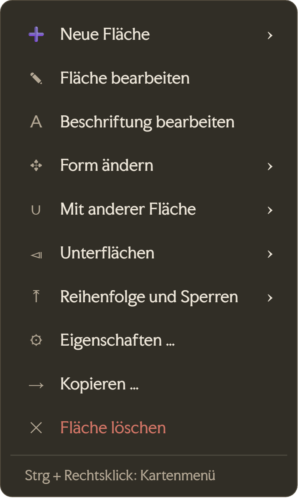
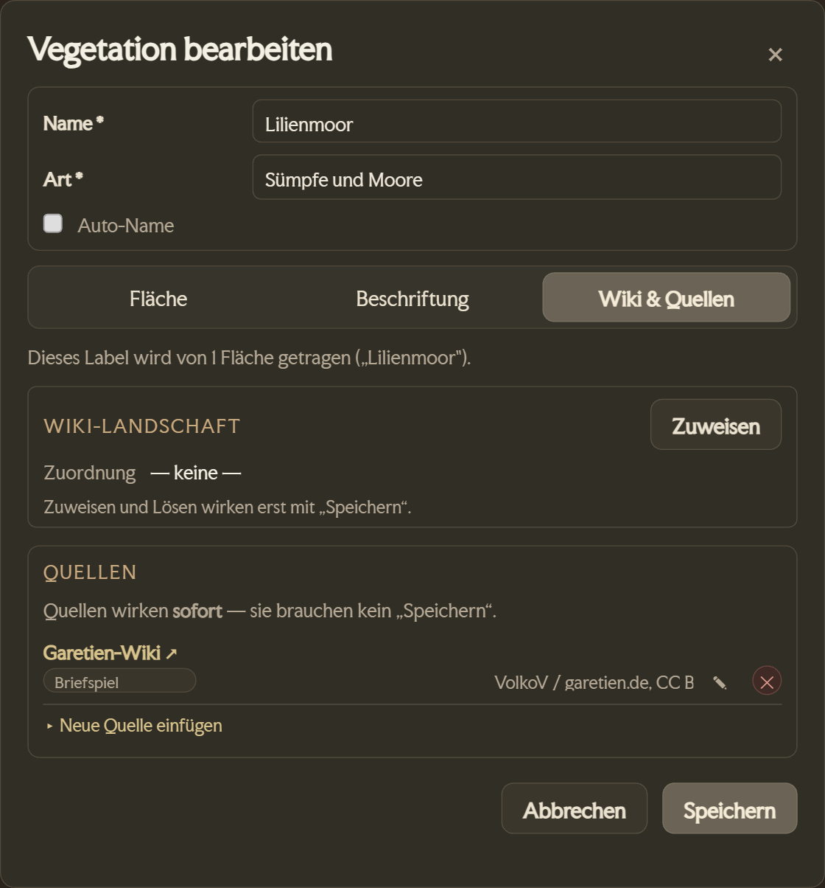
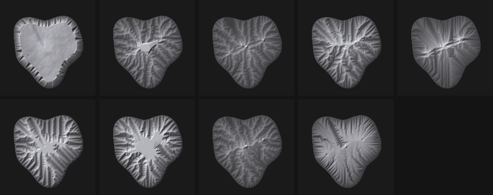
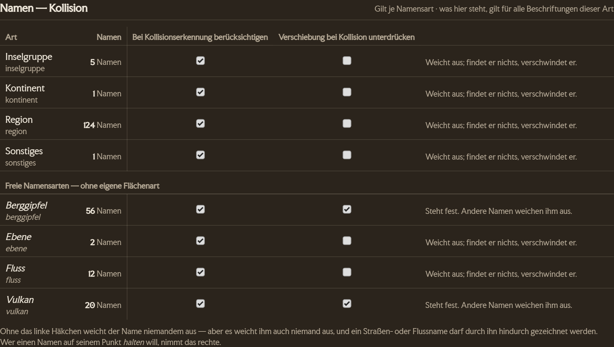
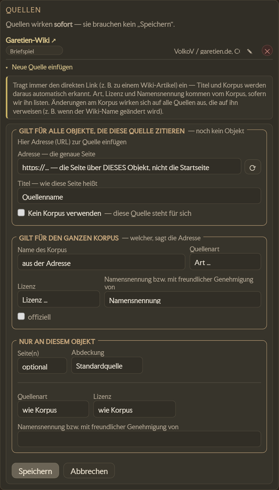

Editor-Handbuch
Willkommen im Editor-Team von Avesmaps. Diese Seite erklärt Schritt für Schritt, wie und wo du was machst. Sie ist zum Nachschlagen gedacht — du musst sie nicht am Stück lesen.
Erste Schritte
Als Editor pflegst du die Karte von Aventurien: Orte, Wege, Flüsse, Regionen, politische Grenzen — und ihre Verknüpfung mit dem Wiki Aventurica. Alles, was du speicherst, geht sofort live.
Zugang & Anmelden
Dein Konto richtet der Betreiber persönlich für dich ein — eine Selbst-Registrierung gibt es nicht. Benutzername und Passwort bekommst du direkt von ihm.
- Öffne avesmaps.de/edit/ ↗ im Browser.
- Gib Benutzername und Passwort ein und klick auf „Anmelden".
- Danach siehst du oben deinen Namen und deine Rolle, rechts das Drei-Strich-Menü ☰ (siehe Das ☰-Menü der Kopfzeile); darunter läuft die Karte im Bearbeiten-Modus.
Die drei Flächen
Im Bearbeiten-Modus arbeitest du auf drei Flächen. Wenn du weißt, welche wofür zuständig ist, findest du alles Weitere von selbst.
- Die Karte. Hier klickst und ziehst du. Linksklick auf ein Objekt öffnet seine Infobox, Rechtsklick öffnet das Kontextmenü zum Anlegen.
- Das Infopanel rechts. Ein Linksklick auf Ort, Weg, Region oder Gebiet zeigt hier alles, was zu diesem Objekt bekannt ist — und im Bearbeiten-Modus den Knopf „Bearbeiten". Von hier aus startest du fast jede Änderung.
- Das „Editor"-Panel. Öffnet sich über den Button „Editor" und hat vier Reiter: Community, Änderungen, WikiSync und Status. Hier liegt die Arbeit, die zu dir kommt (siehe Aufgaben), und der Einstieg in die acht Sync-Editoren.


Oben rechts im Routenplaner, der Leiste am linken Bildrand, sitzen der Hell/Dunkel-Umschalter und der DE|EN-Sprachumschalter. Beide gelten nur für deine Ansicht.
So findest du dich im WikiSync-Reiter zurecht
Der WikiSync-Reiter ist nach demselben Muster aufgebaut, egal womit du arbeitest. Von oben nach unten:
- Übergreifende Knöpfe. „📥 Dump holen" und „⚖️ Konflikte" — sie gehören zu keinem einzelnen Thema, sondern zu allen.
- Die Auswahl. Acht Themen in zwei Spalten: Orte · Territorien · Regionen · Wege · Kraftlinien · Literatur · Karten · Vorkommen. Neben jedem Namen steht das Datum des letzten Syncs („22.07."). „nie" heißt: noch nie gesynct. Eine leere Stelle heißt: Es kam keine Antwort. Zeigst du mit der Maus auf die Zeile, steht der volle Satz da.
- Der Knopf. Darunter steht der Knopf des gewählten Themas, etwa „Wege bearbeiten". Er öffnet nur das Fenster und startet nichts. Der scharfe Sync liegt im Fenster, oben im Menüband. Am Knopf steht, wann zuletzt gesynct wurde.
- Suche, Filter und Liste des Themas. Unter der Suche steht die Bilanzzeile: ohne Filter die Gesamtzahl („1.851 Regionen"), mit Suche oder Filter beide Zahlen („103 von 1.851 Regionen").
Rollen & Rechte
Es gibt drei Rollen. Sie bestimmen, was du darfst.
| Rolle | Was sie darf |
|---|---|
| reviewer | Meldungen und Bewertungen prüfen. |
| editor | Dazu die Karte bearbeiten — Orte, Wege, Territorien, Wiki-Verknüpfung — und über Social Media im Namen des Projekts veröffentlichen. |
| admin | Alles. Dazu die Benutzerverwaltung und das Datenbank-Backup. |
Woran du siehst, was deiner Rolle gehört
Bedienelemente, die nicht jeder sieht, tragen neben ihrer Überschrift den Zusatz „nur Editoren":
- Im Infopanel eines Ortes, Weges, Labels, einer Kreuzung oder Kraftlinie — über den Editier-Kacheln, Überschrift „Bearbeiten".
- Im Rechtsklick-Menü über „Hier hinzufügen", Überschrift „Anlegen".
- Im Anzeige-Menü über den Gruppen „Prüfen" und „Mapstil".
Im -Menü der Kopfzeile heißt der Block entsprechend „Nur Admins".
Die goldenen Regeln
Vier Sätze, auf die sich alles andere zurückführen lässt. Sie stehen bewusst nur hier — alle anderen Abschnitte verweisen zurück.
- Das Wiki Aventurica ist unsere Datengrundlage. Im Zweifel richten wir die Karte nach dem Wiki aus.
- Kleine, sorgfältige Schritte. Lieber eine Sache sauber ändern, speichern und kurz prüfen als viele auf einmal. Ändere nichts blind in Masse.
- Fremde Arbeit stehen lassen. Lösche oder überschreibe nichts, was du nicht selbst angelegt hast, ohne Rücksprache.
- Im Zweifel fragen statt raten — siehe Hilfe & Kontakt.
Dein erster Durchlauf
Nimm dir zehn Minuten und mach einmal den ganzen Weg von der Karte bis ins Protokoll. Danach kennst du den Rhythmus, in dem alles andere abläuft.
- Melde dich an und öffne rechts das „Editor"-Panel. Steht in der Statuszeile
Map: SQL | Rev … | … Features, sind die Daten geladen. - Such dir einen Ort, den du kennst — Rechtsklick auf die Karte → „Auf Karte suchen".
- Linksklick auf den Ort. Rechts öffnet sich das Infopanel mit allem, was zu ihm bekannt ist.
- Klick im Infopanel auf „Bearbeiten" — die Kachel steht ganz unten, unter der Trennlinie „Bearbeiten — nur Editoren". Der Dialog „Ort bearbeiten" geht auf.
- Ändere etwas Kleines und Unstrittiges — etwa einen Tippfehler im Ortsnamen. Wenn nichts zu korrigieren ist, öffne einfach den Bereich „Wiki-Ort" und schau nach, ob eine Wiki-Seite verbunden ist.
- „Speichern". Die Karte aktualisiert sich sofort, ohne dass du neu laden musst.
- Wechsle im Editor-Panel auf den Reiter „Änderungen". Deine Änderung steht ganz oben, mit deinem Namen und der Uhrzeit.
Karten-Features
Die sechs Sorten Inhalt, die wir pflegen. Sie tragen dieselben Namen wie die Reiter unter Editor → WikiSync, denn dort liegt zu jeder Sorte die Abgleichsliste gegen das Wiki.
Zwei Knöpfe, die überall gleich funktionieren
Im Reiter WikiSync stehen über den Sorten-Reitern zwei Aktionen, die für alle Sorten dasselbe bedeuten:
- „📥 Dump holen" — lädt den aktuellen Wiki-Dump und liest ihn in eine Sandbox ein. Schreibt noch nichts Scharfes. Das Wiki erzeugt den Dump einmal im Monat, am Ersten — öfter zu holen bringt nichts Neues. Sein letzter Schritt (4/4) gleicht die Publikationsquellen ab und endet in der Übernahme-Vorschau — dass dort am Ende ein Blatt aufgeht, ist also kein Fehler. Was der Lauf gefunden hat, bleibt danach als „Letzter Dump-Lauf" ganz oben in ⚖️ Konflikte nachlesbar.
- „🚨 Syncen" — gleicht die Objekte der gewählten Sorte gegen den Dump ab. Bei Orten, Kraftlinien, Literatur, Karten und Vorkommen sitzt dieser Knopf nicht im Reiter, sondern im jeweiligen Editorfenster. Bei Karten, Literatur und Vorkommen schreibt er von sich aus nichts: er rechnet nur und legt dir die Übernahme-Vorschau vor.
Die Übernahme-Vorschau: erst zeigen, dann schreiben
Ein Abgleich schreibt nicht einfach los. Er rechnet zuerst, was er tun würde, und legt dir das Ergebnis als Blatt vor: geschrieben wird nur, was angehäkelt ist. Die Zeilen stehen immer in denselben drei Gruppen.
| Gruppe | Was darin steht | Häkchen |
|---|---|---|
| Neu | Im Wiki dazugekommen. | alle vorangehäkelt |
| Geändert | Das Wiki weicht von uns ab — die Zeile zeigt je Feld alt → neu. | alle vorangehäkelt |
| Gelöscht | Im Wiki nicht mehr da. | nichts vorangehäkelt |
Über „Neu" und „Geändert" stehen „alle" und „keine". Über „Gelöscht" bewusst nicht — die häkelst du einzeln an, mit Blick auf das, was mit jeder verschwände. Unten schreibt „Übernehmen". Ist eine Löschung dabei, heißt der Knopf „Übernehmen und 3 löschen" und bleibt gesperrt, bis du den Satz darüber ausdrücklich bestätigt hast — solange der fehlt, geht auch der harmlose Rest nicht durch.
So arbeiten die Abgleiche für Karten, Literatur, Vorkommen und Territorien sowie die Publikationsquellen am Ende von „Dump holen". Zwei Eigenheiten solltest du kennen:
- Bei Literatur und Publikationsquellen bleibt die dritte Gruppe immer leer — diese beiden Abgleiche löschen grundsätzlich nichts, und die Gruppe sagt das auch selbst.
- Bei den Vorkommen heißt die dritte Gruppe nicht „löschen", sondern „stilllegen": der Eintrag verschwindet aus den Listen, behält aber seine Vorkommen und seine Quellen — und nennt das Wiki ihn wieder, wird er ohne dein Zutun wieder aktiv.
Orte, Wege und die Konflikte haben eigene Falllisten, in denen du jeden Fall einzeln entscheidest. Die Regionen haben keine Vorschau.
Jede Sorten-Liste hat oben dieselben Ansichten: Alle, Platziert und Fehlt — mit der Anzahl in Klammern. „Fehlt" ist deine Arbeitsliste: Dinge, die das Wiki kennt und die Karte noch nicht.
Der Kreis neben dem Namen
Rechts neben jedem Namen steht ein kleiner grüner Kreis — in den Listen des WikiSync-Panels und in denen der Editorfenster gleichermaßen. Er beantwortet eine einzige Frage: Ist das hier fertig? Gefüllt heißt ja, leer heißt nein — und die halb gefüllten sind die interessanten Fälle dazwischen.
Die Form ist überall dieselbe, die Frage dahinter nicht. Was „fertig" bedeutet, entscheidet die Objektart: bei Orten die Wiki-Verknüpfung, bei Literatur und Karten die zugeordneten Orte, bei Vorkommen die Verortung, bei Territorien die Untergebiete.
| Objektart | leer | halb | voll |
|---|---|---|---|
| Orte | Fehlt auf der Karte — steht nur im Wiki. Das ist deine Arbeit. | rechts: auf der Karte, aber ohne Wiki-Verknüpfung. Der Ort existiert, ihm fehlt nur die Verbindung. | Auf der Karte und mit dem Wiki verbunden. Fertig. |
| Wege & Kraftlinien | Nicht auf der Karte. Den Zustand gibt es nur in der Panel-Liste — sie führt Wiki-Artikel; im Wege-Editor stehen gezeichnete Wege, und die sind immer da. | Ein Weg ist eine Namensgruppe aus Segmenten — hier trägt nur ein Teil davon den Artikel. | Jedes Segment der Gruppe trägt den Artikel. |
| Regionen | Weder Label noch Fläche zugewiesen. | Zwei unabhängige Hälften, keine Stufe: links = mindestens ein zugewiesenes Label, rechts = mindestens eine zugewiesene Fläche. | Beides. |
| Literatur & Karten | Das Werk liegt nirgends — ihm ist kein Ort zugeordnet. | Mindestens ein zugeordneter Ort ist noch nicht aufgelöst. | Alle zugeordneten Orte sind aufgelöst. |
| Vorkommen | Gar kein Vorkommen eingetragen. | Vorkommen eingetragen, aber keines davon liegt auf der Karte. | Mindestens ein Vorkommen liegt auf der Karte — ein Fundort genügt, anders als bei Literatur und Karten darüber. |
| Territorien | Gebiet und Untergebiete fehlen auf der Karte. | links: nur indirekt da — keine eigene Fläche, aber Untergebiete liegen auf der Karte. rechts: das Gebiet selbst liegt auf der Karte, seine Untergebiete fehlen oder sind unvollständig. | Gebiet und alle Untergebiete sind vollständig auf der Karte. |
Wege
Auf der Karte: Klick auf den Weg → „Bearbeiten" · Anlegen: Rechtsklick → „Hier hinzufügen" → „Neuer Weg" · Liste: Editor → WikiSync → Wege · Editor: ebendort → „Wege bearbeiten"
Straßen, Pfade, Flüsse und Seewege. Sie tragen die Reiseplanung — deshalb ist hier Sorgfalt wichtiger als anderswo.
Ganze Straße oder Abschnitt
Ein Weg liegt auf der Karte in Abschnitten. Alle Abschnitte mit demselben Namen bilden eine Straße, auch über Lücken hinweg. Per Klick wählst du, woran du arbeitest:
| Klick | Gelb markiert ist |
|---|---|
| Erster Klick auf eine Linie | die ganze Straße |
| Zweiter Klick auf einen ihrer Abschnitte | nur dieser Abschnitt |
| Noch ein Klick auf denselben Abschnitt | wieder die ganze Straße |
| Klick auf den Namen eines Wiki-Wegs | wie ein Klick auf die Linie |
| Klick daneben auf die Karte | Markierung aufgehoben |
Die Infobox nennt unter der Wegart, was markiert ist: „Ganze Straße: Ort – Ort" oder „Abschnitt 3: Ort – Kreuzung". „Bearbeiten" bearbeitet das Markierte. „Verlauf bearbeiten" fehlt, solange die ganze Straße markiert ist. Gestrichelt erscheinen Abschnitte anderer Straßen, die diese Straße als weitere Zuweisung tragen.
Der Dialog „Weg bearbeiten"
- Wegname, „Auto-Name" und „Wegname anzeigen". Der Haken blendet den Namen an diesem Abschnitt ein oder aus, auch bei Wiki-Wegen.
- Wegtyp — acht Sorten von Reichsstraße bis Seeweg. Weicht er vom Wiki ab, steht der Wiki-Wert durchgestrichen daneben; ↺ holt ihn zurück.
- Bach (nur bei Flusswegen) — ein Bach bleibt ein Flussweg, ist aber nicht befahrbar. Mit dem Haken werden die Transportmittel grau und leer. Die Infobox nennt ihn „Bach".
- Erlaubte Transportmittel — steuern direkt das Routing. Daneben steht unter „gangbar" je Fahrtyp ein Zeitfenster.
- Wiki-Weg — der Zuweisungskasten, darin auch die weiteren Zuweisungen.
- Strömung (nur bei Flusswegen) — „Richtung festlegen", „Richtung vervollständigen" und der Strömungsfaktor flussaufwärts. „Strömung umkehren" steht auch direkt in der Infobox.
- Quellen — ganz unten, wie bei Orten und Landschaften. Eine Quelle hängt am Abschnitt. Eingetragen wird sie standardmäßig an alle Abschnitte des Weges; die Wahl steht in der Eingabezeile. Löschen und Bearbeiten gelten nur dem einen Abschnitt.
Die ganze Straße bearbeiten
Ist die ganze Straße markiert, gilt der Dialog allen ihren Abschnitten. Der Knopf sagt es: „Speichern für 8 Abschnitte".
- Geschrieben wird nur, was du anfasst. Uneinige Felder stehen auf „— gemischt lassen —" oder als halber Haken mit Zähler („2 von 8"). Lässt du sie so, bleibt jeder Abschnitt, wie er ist.
- Ein neuer Name gilt für alle Abschnitte, auch bei einem Wiki-Weg.
- Auto-Name, Bach und Strömung gibt es nur am einzelnen Abschnitt.
- Der Kasten „Wiki-Weg" zeigt eine Zeile je Wiki-Zuweisung. Klapp eine Zeile auf: Zuweisen und Entfernen gelten nur ihren Abschnitten.
Gangbar: wer wann durchkommt
Jeder Fahrtyp hat an jedem Weg sein eigenes Zeitfenster. Der Haken sagt ob, das Fenster sagt wann:
| Einstellung | Bedeutung |
|---|---|
| kein Haken | Dieser Fahrtyp kommt hier nie durch. |
| Haken + „ganzjährig" | Er kommt immer durch. Gespeichert wird dabei nichts. |
| Haken + Monat | Er kommt nur in diesem Fenster durch. |
Ein eingeschränkter Weg steht auf der Karte kursiv. Die Infobox zeigt dann die Zeile „Einschränkungen", etwa „Nur zu Fuß.". Das passiert bei einem Zeitfenster oder wenn ein übliches Transportmittel fehlt. Zusätzlich erlaubte Transportmittel zählen nicht. Die Schrift gilt der ganzen Straße. Flüsse und Seewege bekommen sie nie.
Der Kasten „Wiki-Weg"
Er steht im Dialog „Weg bearbeiten" und im Wege-Editor und verbindet den Weg mit seinem Wiki-Artikel.
- Zuweisen setzt den Wiki-Namen an allen Abschnitten mit demselben Namen und hakt „Wegname anzeigen" an.
- Danach gehört der Name dir. Es gilt, was du speicherst. „Sync" holt Wegname und Wegtyp aus dem Wiki ins Formular.
- Entfernen fragt nach: nur dieser Abschnitt (empfohlen) oder der ganze Weg. Gelöste Abschnitte bekommen einen eigenen, generischen Namen.
Weitere Wiki-Zuweisungen
Ein Abschnitt kann zu mehreren Wiki-Wegen gehören, etwa wo zwei Straßen ein Stück gemeinsam laufen. Die Zuweisung oben bleibt die Hauptzuweisung. Weitere Artikel trägst du im selben Kasten darunter ein.
- Such den Artikel und klick den Treffer an. ✕ nimmt ihn wieder weg.
- Beides wirkt sofort, ohne „Speichern". Der Wegname ändert sich dabei nie.
- Am Abschnitt gilt es diesem Abschnitt, an der ganzen Straße allen. Abschnitte ohne Hauptzuweisung werden übersprungen.
- Die Infobox zeigt „Auch Teil von", beim anderen Weg „Verläuft auch über".
Verlauf bearbeiten
Die Linie änderst du über „Verlauf bearbeiten" am markierten Abschnitt:
- Knoten ziehen verschiebt sie.
- Doppelklick auf die Linie fügt einen Knoten hinzu, Doppelklick auf einen Knoten löscht ihn.
- Rechtsklick auf einen Zwischenknoten → „Neue Kreuzung und Weg teilen" — der Ein-Klick-Befehl für Regel 1 weiter unten. Beide Hälften behalten Name, Bach, Strömung und Quellen.

Korrekte Wegzeichnung
Das Wegenetz ist ein Graph: Ein Weg verbindet nur das, was an seinen beiden Endpunkten liegt — was nur optisch auf der Linie liegt, zählt nicht. Daraus folgen fünf Regeln; die häufigsten Fehler entstehen alle, wenn man sie umgeht.
Die Wege-Liste im WikiSync-Reiter hat drei Ansichten mehr als die anderen Sorten: „Konflikte", „Ausreißer" und „Flussrichtung unbekannt" — alle drei fertige Arbeitslisten.
„Ausreißer" findet rein geometrisch Segmente, die weitab vom Rest ihres Weges liegen — also vermutlich dem falschen Wiki-Weg zugeordnet sind. Kennt das Wiki einen Verlauf, gleicht die Liste damit ab: Klumpen, die ihm sauber folgen, sortiert sie von selbst aus; mehrdeutige bleiben mit einem Hinweis stehen.
- Ein Klick auf eine Zeile hebt den ganzen Weg auf der Karte hervor. Das abliegende Stück fällt darin von selbst auf.
- „gehört zum Weg" — der Klumpen ist richtig. Er verschwindet dauerhaft aus der Liste und taucht erst wieder auf, wenn der Weg neu gezeichnet wird.
- „gehört nicht zum Weg" — er ist ein Streuner. Er verliert seine Wiki-Zuordnung, bekommt einen eigenen Namen und bleibt als namenloser Weg liegen; die Zeichnung stimmt ja meist, nur der Name nicht.
- Beide Knöpfe wirken auf diesen Klumpen, nie auf den ganzen Weg. Einen Sammelknopf über alle Treffer gibt es nicht.
Der Wege-Editor
Im Reiter Editor → WikiSync → Wege steht der Knopf „Wege bearbeiten". Er öffnet den achten Sync-Editor. Dort arbeitest du der Reihe nach durch, statt jeden Weg auf der Karte zu suchen.
- Links die Wegeliste, in der Mitte die Eigenschaften, rechts das Höhenprofil.
- Die Eigenschaften sind dieselben wie im Dialog „Weg bearbeiten", samt Kasten „Wiki-Weg".
- Eine Zeile ist eine ganze Straße und klappt auf ihre Abschnitte auf. Die Zusammenfassung nennt beides: „3 Wege · 28 Abschnitte".
- Ein Klick auf die Zeile wählt die ganze Straße, ein Klick auf den Pfeil klappt nur auf. Bearbeitet wird sie wie auf der Karte.
- Die Liste nennt Abschnitte „Abschnitt 3: Ort – Ort" und zeigt weitere Zuweisungen in einer eigenen Zeile. Die Suche findet einen Abschnitt auch darüber.
Über dem Höhenprofil schaltet ein Dreier um: Ganzer Weg · je Abschnitt · je Wegstück. Beim ganzen Weg laufen alle Abschnitte in einer Kurve, ihre Grenzen gestrichelt. Darunter steht der Höchste Punkt über Start — die Zahl, die man bei einem Pass sucht. Hängen die Abschnitte nicht lückenlos aneinander, bekommt jedes Teilstück eine eigene Kurve.
Im Menüband stehen „🚨 Wege syncen", „Wegprofile rechnen", „Tempowerte", „Wegprofile kalibrieren" und „Funktionen anzeigen". Das letzte zeigt das Reisemodell als Kurven.
Die Zugehörigkeit („führt durch") steht im Editor nur zum Lesen. Gerechnet wird sie im Landschaften-Editor unter „Rechnen ▾" → Zugehörigkeit.
„Tempowerte" — die Zahlen hinter jeder Reisezeit
Die Kachel „Tempowerte" öffnet das Fenster „Tempowerte — die Zahlen der Geographia Aventurica". Darin stehen die Werte, aus denen die Reiseplanung jede Dauer rechnet: die Tagesleistung je Reisemittel, der Geländefaktor je Wegtyp, das Tempo querfeldein je Landschaft, die Bodenabzüge nach Jahreszeit. Sie sind einstellbar, und neben deinem Wert steht der Wert der Quelle, damit sichtbar bleibt, wo jemand bewusst abgewichen ist. Steht dort ein „—", kennt die Geographia Aventurica zu dieser Zeile überhaupt keinen Wert — dann ist es unsere eigene Regel und es gibt nichts zu vergleichen.
Das Fenster hat acht Abschnitte. Der erste, „Raster: Reisemittel × Wegtyp", ist der eigentliche Speicher — die beiden Listen darunter zeigen nur, was daraus folgt. Es folgen „Reisetag: Stunden am Tag", „Landschaften querfeldein", „Boden nach Jahreszeit", „Fluss und Eichung" und „Querfeldein-Aufschlag", dann zwei reine Auskünfte: „Was von der Quelle abweicht" listet jede Abweichung auf, und „Nicht aus der Quelle — unsere Rechnung" nennt die Werte, die gar nicht aus der Geographia Aventurica stammen und deshalb nicht einstellbar sind.
- Krumme Zahlen sind Absicht. Die Quelle nennt nie eine Geschwindigkeit, immer eine Tagesleistung; das Tempo wird daraus umgerechnet. Wer eine Zahl glattzieht, kappt die Zuordnung zur Quelle.
- Der „Querfeldein-Aufschlag" ist keine Geschwindigkeit, sondern eine Regel: Eine Etappe ohne Weg wird mit ihrer eigenen Länge langsamer — eine kurze Abkürzung kostet fast nichts, ein Gewaltmarsch quer durchs Land viel. Zwei Zeilen: die Steigung je Meile (0 schaltet sie ab) und der Höchstaufschlag, ab dem sie nicht weiter wächst. Beide gehören zusammen — verdoppelst du die Steigung und lässt den Deckel stehen, verschiebst du unbemerkt die Grenze, ab der sie wirkt. Gemessen wird die Luftlinie der Etappe, nicht die gelaufene Strecke. Ein Stück Weg dazwischen setzt den Aufschlag zurück: Wer einen Ort berührt, rastet dort.
- Der „Reisetag" ist der Nenner des Rasters darüber — drei Zeilen: an Land (8 h), Fluss und See (12 h), Schnellsegler (24 h, fährt durch). Der Rest des Tages ist Rast. Verstellst du die Stunden, zieht das Raster mit: Die Tagesleistung bleibt, was die Quelle sagt, und das Tempo folgt — 8 Stunden zu 4,61 Meilen/h sind dieselben 30 Meilen am Tag wie 12 Stunden zu 3,07. Stunden und Rasterzellen aber nicht im selben Zug: „Speichern" schickt das Raster dann nicht mit, weil es unter den alten Stunden gezeichnet wurde. Erst speichern, dann Zellen anfassen.
- „auf unseren Wegen" ist die gemessene Gegenprobe: was auf den tatsächlich gezeichneten Wegen dieser Art herauskommt. „nicht vermessen" heißt, dass dort kein Höhenprofil vorliegt — es heißt nicht „ebenes Gelände".
- Der kleine ↩ steht nur an einer geänderten Zeile und nimmt deine eigene Eingabe zurück, ohne etwas zu schreiben. Die größeren Rücksetzer am Fuß eines Abschnitts ziehen dagegen auf die Quellenwerte und schreiben sofort; was sie bewegt haben, steht danach als „war 3,45" hinter jedem betroffenen Feld.
Kleinigkeiten, die Zeit sparen
- Beschriftungen sind im Bearbeiten-Modus klickdurchlässig. Liegt ein Weg- oder Flussname über der Linie, geht der Doppelklick hindurch und setzt den Stützpunkt, wo du hinzeigst.
- Namenlose Wege darfst du benennen. Trägt ein Segment noch einen technischen Namen wie
Reichsstrasse-16, ist das ein Altbestand und kein Sonderfall — gib ihm den richtigen Namen oder verknüpfe ihn mit seinem Wiki-Weg. - Der Wegtyp ist Fließtext. Er ist kein Schlüssel, an dem etwas hängt, sondern nur die Beschriftung darunter — dass die Suche gröber einteilt als der Editor, ist Absicht und kein Widerspruch.
Orte
Auf der Karte: Linksklick → Infopanel → „Bearbeiten" · Anlegen: Rechtsklick → „Hier hinzufügen" → „Neuer Ort" · Liste: Editor → WikiSync → Orte
Orte sind Dörfer, Städte, Metropolen und besondere Bauwerke. Sie sind der häufigste Bearbeitungsfall.
Der Dialog „Ort bearbeiten"
- Position — die Koordinaten, nur zur Anzeige. Verschieben tust du den Ort, indem du ihn auf der Karte ziehst.
- Identität — Ortsname, Ortsgröße, Art und die drei Wiki-Angaben Einwohner, Lage und Herrscher; die drei darfst du auch von Hand überschreiben. Wiki-Werte holt „Sync" im Zuweisungskasten, mit Vorschau.
- Beschreibung — ein Textfeld, beschriftet „Beschreibung — öffentlich sichtbar". Was hier steht, erscheint in der Infobox; bis 1.200 Zeichen.
- Optionen — „Ort ist ein Nodix", „Ruine/zerstört", „Verborgen".
- Wiki-Ort — der Zuweisungskasten.
- Quellen — womit dieser Ort belegt ist. Mehrere Einträge sind normal; siehe Quellen.
- Wappen — „Ersetzen / hochladen" (Datei oder Bild-Adresse, bis 5 MB, SVG erlaubt) und „Entfernen"; ein Klick auf das Bild selbst tut dasselbe wie der erste. Daneben steht, woher das gezeigte Wappen stammt. Erscheint erst, nachdem der Ort einmal gespeichert wurde. Beim Hochladen fragt der Dialog Lizenz, Urheber und Kommentar — siehe Bilder & Lizenzen.
„Verborgen" — ein Ort ohne Punkt auf der Karte
- Er bekommt weder Markierung noch Namen.
- Die Reiseplanung wählt ihn nicht von sich aus als Ziel oder Zwischenstation. Liegt er an einer Straße, fährt eine Route hindurch — sie nennt ihn nur nicht in der Etappenliste.
- Wer den Namen kennt, findet ihn: über die Suche und über die Wegpunktsuche, wo er als „Verborgen" gekennzeichnet ist. Er bleibt dann für diesen Besuch sichtbar.
- Alle verborgenen Orte holst du über „Verborgene Orte" im Anzeige-Menü aufs Bild.
Einen Ort verschieben — und die Wege dabei liegen lassen
Ziehst du einen Ort (oder eine Kreuzung) auf der Karte, wandern alle angeschlossenen Wegenden mit. Das ist der Normalfall und hält das Wegenetz dicht. Bei einem weiten Zug ist es aber genau das Falsche: Die Straßen werden quer über die Karte gedehnt, oder ein Ende landet an etwas, mit dem es nichts zu tun hat.
Hältst du beim Ziehen Strg (auf dem Mac Cmd), bleiben die Wege liegen, wo sie sind — der Ort löst sich von ihnen. Damit dieser Zustand nicht untergeht, sagt die Karte ihn dir laufend an:
- Jedes zurückgelassene Wegende bekommt einen Ring auf der Karte. Ein Klick darauf öffnet den Verlauf dieses Weges, damit du das Ende wieder auf den Ort ziehen kannst.
- Oben sitzt ein Zähler — „2 offene Wegenden — noch nicht wieder angeschlossen" — mit dem Knopf „Zum nächsten". Er springt der Reihe nach alle offenen Enden an.
- Der Zähler überlebt das Neuladen und verschwindet erst, wenn das letzte Ende wieder hängt.
Der Ortseditor
Editor → WikiSync → Orte → „Orte bearbeiten"
Für alles, was über einen einzelnen Ort hinausgeht, gibt es ein eigenes Fenster mit drei Spalten: links der Territorienbaum, in der Mitte die Ortsliste, rechts „Eigenschaften & Overrides". Oben das Menüband:

| Kachel | Was sie tut |
|---|---|
| 🚨 Syncen | Holt die Orte aus dem Dump. Betreiber-Aktion. |
| Orte zuordnen | Ordnet in einem Rutsch allen Orten ihr Herrschaftsgebiet zu. Zeigt vorher eine Vorschau. |
| Nur Auswahl anzeigen | Blendet auf der Karte alles aus, was nicht in deiner aktuellen Auswahl liegt. |
| Wappen & Bilder ▾ | Vier Einträge. Drei Notaus-Schalter fürs öffentliche Frontend — „Lokale Wappen" (eigene Uploads), „Wiki-Wappen" und „Ortsbilder"; gelöscht wird nichts, im Editor bleibt alles sichtbar. Wie alle drei stehen, sagt die Unterzeile des Knopfes („lokal an · Wiki aus · Bilder an") — ohne Aufklappen. Dazu „Hole Wiki-Wappen", eine Betreiber-Aktion; an ihrem Ende prüft sie die Wappenfelder mit und fragt nach, wenn sie etwas findet. Der Territorien-Monitor trägt dasselbe Menü — dort ohne „Ortsbilder", das Feld gibt es nur bei Orten — und die zwei Wappen-Schalter gelten beiden Seiten gemeinsam. |
| 🔗 Links prüfen | Prüft die hinterlegten Quellen-Links auf Erreichbarkeit. |
| Darstellung | Ab welcher Zoomstufe eine Ortsklasse überhaupt erscheint, wie groß dort ihr Punkt und ihr Name sind. Ansehen darf jeder Editor, einstellen nur Admins. |
„Darstellung" — Zoomstufen, Größen, Abstände
Zwei Kurventafeln für die sechs Ortsklassen über neun Zoomstufen: Marker in px und Label in pt. Darunter fünf Regler:
- Konturbreite — wie dick der weiße Ring um den roten Kern ist, in Prozent des Kerns. Bei 0 % gibt es keinen.
- Spalt — Abstand vom Punkt zu seinem Namen.
- Repel — Luft um jeden Namen, bevor geprüft wird, ob zwei sich überlappen.
- Versatz — wie weit ein Name ausweicht, wenn sein Platz belegt ist.
- Max. Drift — wie weit er sich dabei höchstens von seinem Punkt entfernen darf. Bleibt darunter nichts frei, fällt er weg.
Eine Vorschau mit absichtlich gedrängten Orten zeigt sofort, was die Regler bewirken. „Alles zurücksetzen" holt die Vorgabe zurück. „Speichern" schließt das Fenster — bleibt es offen, steht der Grund darin. Ohne Admin-Recht steht statt der Knöpfe ein Satz; das ist kein Fehler.
Die Liste finden lernen
Die mittlere Spalte hat oben „Alle", „Platziert" und „Fehlt", daneben das Suchfeld „Name suchen…" und ein Dropdown „Filter ▾" mit sieben Abschnitten: Zuordnung („Alle" / „Zugeordnet" / „Nicht zugeordnet"), Typ, darunter eingerückt „↳ Lage (nur Bauwerke)" („außerorts" / „innerorts" / „unklar"), Kontinent (voreingestellt auf Aventurien), Quelle („Wiki" / „Andere" / „Keine"), Wappen und Bilder. Sind Filter aktiv, zeigt der Knopf ihre Anzahl.
Im Abschnitt „Zuordnung" des Filters zeigt „Nicht zugeordnet" die platzierten Siedlungen ohne Territorium — deine Arbeitsliste für die Zuordnung —, „Zugeordnet" die mit Territorium. Solange „Nicht zugeordnet" aktiv ist, wird die Baum-Auswahl links ausgeblendet.
Der Territorienbaum links
Er dient nur zum Filtern, nicht zum Zuordnen. Jeder Knoten hat ein Kästchen mit drei Zuständen: angehakt (dieses Gebiet und alles darunter), Querbalken (nicht selbst gewählt, aber etwas darunter schon) und leer. Ohne jedes Häkchen siehst du alles.
„Orte zuordnen"
Der Knopf ordnet jedem Ort per Ray-Cast sein Herrschaftsgebiet zu. Zuerst kommt eine Vorschau mit vier Zahlen — Zugeordnet, Geändert, Nicht zugeordnet, Übersprungen (manuell) — und einer Beispielliste Name → Zielterritorium. Erst „Übernehmen" schreibt.

Was der Lauf beachtet, ohne dass du es siehst:
- Nur platzierte Orte. Reine Wiki-Orte haben keine Koordinate und bleiben unberührt.
- Von Hand gesetzte Zuordnungen werden nie überschrieben — sie erscheinen als „Übersprungen (manuell)".
- Gewinner ist die tiefste Ebene: liegt ein Ort in Grafschaft und Baronie, bekommt er die Baronie. Bei Gleichstand die kleinere Fläche.
- Findet sich kein Gebiet, bleibt die Zuordnung leer. Es wird nichts geraten.
Die rechte Spalte
Sie ist geordnet wie jedes Editorfenster: „Identität" (Name, Typ, Einwohner, Lage, Herrscher, Beschreibung), „Eigenschaften" (die Häkchen „Ort ist ein Nodix", „Ruine / zerstört", „Verborgen"), der Zuweisungskasten, die Quellen — dann die Speicherleiste. Region und Staat zeigt der Zuweisungskasten.
Unter „Lage & Zugehörigkeit" — als einzigem Abschnitt unterhalb der Speicherleiste — sitzt das einzige echte Override: das Territorium. Daneben steht, woher es stammt — „manuell" oder „Ray-Cast · tiefste Ebene". Mit „ändern" setzt du es selbst; ab dann ist es manuell und kein Massenlauf fasst es mehr an.
Bilder
Unter dem Wappen liegt die Galerie: bis zu zehn Bilder je Siedlung. Über die Kachel „＋ Bild hochladen" kannst du mehrere auf einmal auswählen, sie werden nacheinander hochgeladen. Die Reihenfolge änderst du, indem du die Vorschaubilder ziehst.
Jedes Bild hat ein Lizenzfeld mit vier Werten. Drei davon werden öffentlich ausgeliefert: „Public Domain", „CC0" und „Von uns KI-generiert". Der vierte, „Unbekannt/CC/Sonstiges (nicht öffentlich)", wird es nicht.

Eigene Bilder erzeugen
KI-generierte Bilder sind ausdrücklich erwünscht — lad sie gerne hoch. Fehlt einem Ort ein Bild, erzeug selbst eines: genau dafür ist der Wert „Von uns KI-generiert" da, und er ist deshalb die Voreinstellung. Mit dem Hochladen erklärst du dich einverstanden, dass das Bild gemeinfrei wird — es erscheint öffentlich in der Infobox.
Ein bewährter Grundbaustein für den Auftrag (erprobt mit ChatGPT, dürfte mit anderen Werkzeugen genauso funktionieren):
Consistent style in the following session. Middle Ages. Oil painting. Art work for a pen'n'paper RPG. 16:9. Village with a mill and fields, grassland landscape.
Der erste Satz hält den Stil über eine ganze Sitzung zusammen — so passen mehrere Bilder zueinander, statt jedes für sich auszusehen. Den letzten Satz tauschst du gegen das, was dein Ort zeigen soll.
„Nur Auswahl anzeigen"
Zeigt auf der Karte nur die Orte, die die mittlere Liste gerade anzeigt — mit allen Filtern, dem Reiter und der Baum-Auswahl zusammen. Solange das aktiv ist, sitzt oben rechts auf der Karte der Hinweis „Gefilterte Ansicht aktiv ✕"; ein Klick darauf stellt die volle Ansicht wieder her.
Territorien
Auf der Karte: Rechtsklick auf ein Gebiet → eigenes Menü · Liste: Editor → WikiSync → Territorien
Herrschaftsgebiete — Kaiserreiche, Königreiche, Grafschaften, Baronien — liegen als Flächen über der Karte und sind die einzige Sorte mit einem eigenen Rechtsklick-Menü.
- „Territoriumseditor öffnen" — Eigenschaften und Hierarchie.
- „Grenzen bearbeiten" — nur die Geometrie.
- „Grenzen berechnen" — errechnet die Außengrenze aus den Kindern (nur bei reinen Container-Gebieten sinnvoll).
- „Orte hier zuordnen" — ordnet die Orte innerhalb dieses einen Gebiets zu.
- „Infobox anzeigen", „Neues Gebiet herauslösen" und „Löschen".
Die Formwerkzeuge stehen in zwei Untermenüs. Fahr mit der Maus auf den Eintrag, dann klappt es auf:
| Untermenü | Darin |
|---|---|
| „Form ändern ▸" | Verschieben · Gebiet zerschneiden |
| „Mit anderem Gebiet ▸" | die vier Verrechnungen — siehe Die Formwerkzeuge weiter unten |

Bist du der Zweite, ändert sich am Ansehen nichts — du bekommst den ganzen Baum, alle Geometrien und den Verlauf. Nur das Speichern fällt weg, und das sagt dir die Oberfläche an drei Stellen:
- Im Territoriumseditor steht oben ein Hinweisband: „… bearbeitet gerade die Territorien (seit 14:20 Uhr). Du kannst alles ansehen, aber nicht speichern." Der Speichern-Knopf ist ausgegraut. Die Uhrzeit steht bewusst dabei — an ihr erkennst du, ob dort jemand arbeitet oder nur ein Tab offen liegt.
- Auf der politischen Karte gibt es kein Band; dort antwortet jeder verändernde Eintrag des Rechtsklick-Menüs mit „Bearbeiten blockiert – … ist im politischen Modus.". „Infobox anzeigen" bleibt offen.
- Wird das Recht frei, meldet sich die Karte von selbst: „Die Territorien sind jetzt frei — du kannst speichern."
Wer es gerade hält, steht im Reiter Status → Editoren: Hinter seinem Namen sitzt ein *. Admins finden dort außerdem „Bearbeiten erzwingen" — den Notausgang für den Tab, der niemandem mehr gehört.
Grenzen bearbeiten
„Grenzen bearbeiten" zeigt jede Ecke des Gebiets als Griff. Ziehen verschiebt sie, Doppelklick auf einen Griff löscht sie.
Beim Loslassen passieren zwei Dinge: Der Punkt rastet ein, wenn ein Nachbargebiet dort eine Ecke oder Kante hat — und jedes Nachbargebiet, das genau diesen Punkt teilt, wird mitgezogen und mitgespeichert. So bleiben aneinandergrenzende Gebiete lückenlos, ohne dass du jede Grenze zweimal ziehst.
Das Einrasten kündigt sich an. Während du ziehst, erscheint ein Ring genau dort, wohin der Punkt beim Loslassen springen wird: durchgezogen über einer Ecke, gestrichelt über einem Punkt auf einer Kante. Eine Ecke hat dabei Vorrang, auch wenn die Kante näher liegt. Kein Ring heißt: Hier rastet nichts ein, der Punkt bleibt, wo du loslässt. Das Mitziehen der Nachbarn sieht man dagegen erst am Ergebnis.
Die Strg-Taste ist der Umschalter dafür. Gedrückt gehalten gilt beides nicht — sie regelt den Umgang mit Punkten und Linien:
| Strg + | Was passiert |
|---|---|
| einen Punkt ziehen | Löst ihn heraus. Kein Einrasten — darum erscheint auch kein Ring —, und die Nachbarn bleiben liegen: die gemeinsame Grenze trennt sich an dieser Stelle auf. Der Punkt bleibt genau dort, wo du loslässt. |
| über eine Linie fahren | Hebt die Kante unter dem Zeiger hervor — die, die der nächste Klick trifft. |
| auf die Linie klicken | Setzt vier gleichmäßig verteilte Punkte hinein; aus einer Kante werden fünf Abschnitte. So bekommst du Material zum Formen, wo vorher eine gerade Strecke war. |
Die Formwerkzeuge
Alle vier arbeiten gleich: Du startest sie auf dem Gebiet, das du angeklickt hast, dann wählst du ein Zielgebiet — oben erscheint dazu der Hinweis „Kontur des Zielgebiets anklicken.". Was danach passiert, unterscheidet sich in einem Punkt, den man den Namen nicht ansieht:
| Werkzeug | Dein Gebiet bekommt … | Das Zielgebiet |
|---|---|---|
| Mit anderem vereinigen | beide Flächen zusammen | wird aufgezehrt |
| Von anderem ausschneiden | seine Fläche minus der des Ziels | wird aufgezehrt |
| Von anderem ausschneiden und anderes beibehalten | dasselbe | bleibt stehen |
| Neues von anderem ausschneiden | nur die Überlappung beider | bleibt stehen |
Im Territoriumseditor
- Wiki-Herrschaftsgebiet — der Zuweisungskasten; gesucht wird darin.
- Hierarchie — den Baum durchsuchen und das Gebiet per Ziehen einordnen; „Zuweisung aufheben" löst sie wieder.
- Name, Wappen, Hauptstadt und Gültigkeit stehen hier nur zum Lesen. Du änderst sie über „Im Wiki-Sync bearbeiten".
- Kartensichtbarkeit („Zoom von" / „Zoom bis"), Farbe und Transparenz.
- Quellen — ganz unten, derselbe Block wie bei Orten, Wegen und Landschaften. Auch ein von Hand angelegter Knoten trägt sie.

Den großen Abgleich gegen das Wiki macht der eigene Editor hinter „Syncen" — mit Hierarchiemodell, Unterschieden und Lückenliste. Der Knopf öffnet diesen Editor; die scharfe Übernahme löst du darin bewusst aus, sie läuft nicht schon beim Klick. Wie die Hierarchie gedacht ist, steht unter Die Gebiets-Hierarchie.

Regionen
Auf der Karte: Linksklick auf die Beschriftung → „Bearbeiten" · Anlegen: Rechtsklick → „Hier hinzufügen" → „Neues Label" · Liste: Editor → WikiSync → Regionen
„Regionen" sind die Landschaftsnamen auf der Karte — das Svellttal, der Farindelwald, das Meer der Sieben Winde. Technisch sind es Beschriftungen, keine Flächen. Liegt eine Fläche darunter, bearbeitest du beide im selben Fenster; liegt keine darunter, heißt es „Freies Label bearbeiten".
Die Blöcke des Dialogs
- Kopf — Name und Art, beide mit ↻ zum Übernehmen aus dem Wiki. Die Art ist nicht auf „Region" beschränkt — die vollständige Liste steht unter Die Auswahllisten. Der Haken Nodix steht im Reiter Beschriftung.
- Höhe (Schritt) — steht unten im selben Block und erscheint nur, wenn die Art Berggipfel oder Vulkan ist: ein Zahlenfeld mit Schieberegler (0–20.000). Ein leeres Feld füllt sich dabei mit 5.000 — der Wert, mit dem die Karte für einen Gipfel ohne erfasste Höhe ohnehin rechnet. Eine bereits erfasste Höhe bleibt unangetastet, auch wenn du den Dialog nur öffnest.
- Darstellung — Größe, Kurvenbeschriftung, Anzahl Kurvenlabel (erscheint erst mit dem Haken), „Sichtbar ab/bis Zoom", Priorität. Damit steuerst du, wann und wie prominent die Beschriftung erscheint. An Größen- und Zoomreglern steht als Marke, was die Tafel „Darstellung" für diese Art vorschlägt — du darfst davon abweichen. Größe und Priorität wirken sofort auf der Karte, während du am Regler ziehst. Schließt du den Dialog ohne zu speichern („Abbrechen", ×, ESC), geht die Beschriftung auf ihren alten Stand zurück. Bei einer neuen Beschriftung gibt es noch keinen Marker, an dem sich das zeigen könnte.
- Wiki-Landschaft — der Zuweisungskasten. Liegt eine Fläche darunter, gehört der Artikel der Fläche: Fläche und alle ihre Beschriftungen tragen immer denselben. Änderst du ihn hier, ziehen beim Speichern die übrigen Beschriftungen mit.
- Quellen — derselbe Block wie bei Orten und Wegen, über den gemeinsamen Quellenkatalog. Die Quellen gehören der Fläche, nicht der Beschriftung: liegt eine Fläche darunter, siehst und änderst du hier deren Liste. Eine eigene hat nur eine freie Beschriftung ohne Fläche.
Der Landschaften-Editor
Editor → WikiSync → Regionen → „Landschaften bearbeiten"
Einer der Sync-Editoren, mit drei Spalten: links Regionen, in der Mitte Eigenschaften, rechts „Vorschau & Vorkommen". Oben das Menüband — dort steht auch das Syncen, nicht im Reiter. Für die Beschriftungsarbeit brauchst du davon nur „Darstellung".
| Kachel | Was sie tut |
|---|---|
| 🚨 Syncen | Holt die Regionen aus dem Dump. Betreiber-Aktion. |
| Rechnen ▾ | Fünf Läufe für die Landschaften-Ebene: Zugehörigkeit, Höhenraster, Wegprofile, Kurven und „Wiki & Art" — der letzte trägt Wiki-Landschaft und Art einer Fläche an ihre Beschriftungen nach. Welcher gerade läuft, sagt die Unterzeile des Knopfes. |
| Geländeabhängiges Reisen | AN/AUS: rechnet Anstieg und Gefälle in die Reisezeiten ein — für alle Besucher. |
| Darstellung | Farbe, Größe und Zoomband je Flächen- und Namensart. Ansehen darf jeder Editor, einstellen nur Admins. |
Viele Beschriftungen auf einmal
In der Liste im Reiter trägt jede Zeile den Knopf „Label zuweisen".
- Er stellt alle Beschriftungen der Karte zur Auswahl, nicht nur die namensgleichen. Die bereits verknüpften sind vorgehakt.
- Hängt eine Beschriftung an einer anderen Wiki-Landschaft, steht das an ihrer Zeile. Die Vorschau zählt, wie viele davon umgehängt werden.
- Hängt sie an einer Fläche, bekommt die ganze Fläche den Artikel.
- Erst „Vorschau" — ein Trockenlauf, der nichts schreibt —, dann „Zuweisen". Änderst du zwischendurch die Auswahl, verfällt die Vorschau.
Lösen lässt sich eine Verknüpfung hier nicht. Das macht der Dialog oben.
Verschieben, duplizieren, löschen
Der Linksklick auf eine Beschriftung bietet außerdem „Label verschieben", „Position zurücksetzen", „Label duplizieren" und „Label löschen" — sowie „Neue Kraftlinie". „Position zurücksetzen" holt die Beschriftung auf den Punkt zurück, den das Anlegen einer Fläche vergibt, und steht nur dort, wo eine Fläche darunter liegt; trägt die Fläche mehrere Beschriftungen, fragt sie vorher nach. Kraftlinien sind ein eigener Objekttyp, unabhängig vom Wegenetz — siehe unten.
Landschaften
Auf der Karte: Kartenmodus „Landschaften" wählen (Taste L) · Anlegen: Rechtsklick auf leere Karte → „Hier hinzufügen" → „Neue Vegetation" · Ecken bearbeiten: Rechtsklick auf die Fläche → „Fläche bearbeiten" · oder Doppelklick auf die Fläche
Während eine Region nur ein Name auf der Karte ist, ist eine Landschaft eine Fläche: der Umriss des Farindelwaldes, die Ausdehnung des Raschtulswalls, der Rand der Khôm. Daraus rechnet die Karte später das Gelände und damit die Reisezeiten — eine sauber gezogene Fläche ist also keine Dekoration.
Die vier Ebenen
Oben auf der Karte steht der Ebenen-Schalter: Alle · Derographie · Vegetation · Topographie · Klimazonen. Immer nur eine Ebene nimmt Klicks entgegen — die, die dort ausgewählt ist. In „Alle" kannst du nicht bearbeiten. Wähl erst eine Ebene. Anklicken und Auswählen gehen dort, aber Flächenmenü, Ecken-Editor, „Neue Fläche" und Strg+Z fallen weg. Umschalten lädt nichts neu und wirft nichts weg.
| Ebene | Was hineingehört | In „Alle" |
|---|---|---|
| Vegetation | Wälder, Steppen, Sümpfe, Wüsten — der Bewuchs. Hier liegt die meiste Arbeit, deshalb ist sie vorausgewählt. | sichtbar |
| Topographie | Das Relief: Gebirge, Hügelland, Ebenen, Gewässer. | sichtbar |
| Derographie | Die großen erdkundlichen Räume darüber. | Ohne Füllung obenauf, nimmt keine Klicks. Anfassbar ist nur ihr Name — so kommst du an Wald und Gebirge darunter heran. |
| Klimazonen | Sonderfall — wird nicht gezeichnet, sondern gerechnet. Siehe unten. | Ganz aus. Ihre kartenbreiten Bänder legten sich sonst über alles andere. |
Eine neue Fläche zeichnen
- Rechtsklick auf die leere Karte → „Hier hinzufügen" → „Neue Vegetation", „Neue Topographie" oder „Neue Derographische Region". Der Eintrag schaltet zugleich auf die passende Ebene.
- Klicken setzt Punkt für Punkt den Umriss; eine Linie läuft mit dem Zeiger mit und zeigt ab dem zweiten Punkt auch schon den Schluss zurück zum Anfang.
- Doppelklick oder Enter schließt die Fläche ab, Esc bricht ab.
- Erst beim Abschließen entsteht etwas — danach geht das Bearbeiten-Fenster auf. Es heißt nach seiner Ebene: „Vegetation bearbeiten", „Topographie bearbeiten" oder „Derographie bearbeiten".
Eine Fläche aus Territoriengrenzen
Wo eine Landschaft ohnehin einem Herrschaftsgebiet folgt, musst du sie nicht nachzeichnen. Rechtsklick → „Hier hinzufügen" → „Grenzen aus Territorien importieren" öffnet den Dialog „Grenze aus Territorien": Du wählst oben die Ebene der neuen Fläche (vorausgewählt Derographische Region — politische Grenzen folgen am ehesten der Landgliederung), dann die Gebiete, und „Einfügen" legt ihre Vereinigung als eine Fläche an. Danach geht von selbst „Fläche vereinfachen" darüber auf, denn Territoriengrenzen bringen sehr viele Ecken mit.
Gewählt wird auf zwei Wegen, und sie ergänzen sich:
- Auf der Karte. Zeig auf ein Gebiet — es leuchtet auf und nennt seinen Namen; Klick nimmt es dazu, ein zweiter Klick wieder weg. Hast du den Dialog per Rechtsklick auf einem Gebiet geöffnet, ist dieses schon gewählt.
- Im Baum. Das Suchfeld „Gebiet suchen" und die Hierarchie darunter — hier nimmt ein Häkchen seinen ganzen Teilbaum mit.
Was zusammengekommen ist, steht als „Gewählt (N)" darüber dem Knopf, jedes Gebiet mit einem „×", dazu „Leeren". Ohne diesen Korb wären Klicks in einem Baum aus über neunhundert Zeilen nicht wiederzufinden.
Ecken ziehen — nach dem Doppelklick
| Geste | Wirkung |
|---|---|
| Ecke ziehen | Verschiebt sie. Gespeichert wird gebündelt, kurz nachdem du loslässt — nicht bei jeder einzelnen Ecke. |
| Doppelklick auf eine Ecke | Löscht sie. |
| Doppelklick auf eine Kante | Setzt genau eine neue Ecke, dort wo du gezielt hast. |
| Strg+Klick auf eine Kante | Setzt vier Ecken auf einmal, gleichmäßig verteilt — zum Verfeinern eines langen, geraden Stücks. |
| Strg+Z | Nimmt Eckenbewegungen zurück, bis zu 20 Schritte. |
| Doppelklick daneben | Beendet das Bearbeiten. |
Pinsel und Radiergummi
Um eine Fläche großzügig zu erweitern oder zu beschneiden, nimm im Flächenmenü „Fläche malen" oder „Fläche radieren". Beide wirken auf die ausgewählte Fläche. Eine neue Fläche entsteht dabei nie.
| Geste | Wirkung |
|---|---|
| Ziehen | Malt Fläche dazu oder nimmt sie weg. Gespeichert wird einmal je Strich. |
| Strg+Mausrad | Ändert die Größe des Pinsels. |
| Leertaste halten | Verschiebt die Karte, statt zu malen. |
| Esc | Beendet das Werkzeug. |
Das Flächenmenü
Ein Rechtsklick auf eine Fläche öffnet ihr eigenes Menü. Strg+Rechtsklick holt statt dessen das normale Kartenmenü.
| Eintrag | Was er tut |
|---|---|
| Neue Fläche ▸ | Die Anlege-Einträge der Ebene. |
| Fläche bearbeiten | Legt die Ecken frei. |
| Beschriftung bearbeiten | Öffnet die Beschriftung der Fläche. |
| Form ändern ▸ | Verschieben · Zerschneiden · Malen · Radieren · Vereinfachen · Labelkurve aktualisieren |
| Mit anderer Fläche ▸ | Die fünf Verrechnungen, siehe unten. |
| Unterflächen ▸ | Für eine Fläche aus mehreren Teilen, siehe unten. |
| Reihenfolge und Sperren ▸ | Siehe unten. |
| Eigenschaften … | Öffnet das Bearbeiten-Fenster, nicht die Ecken. |
| Kopieren … | Legt denselben Umriss in einer anderen Ebene an. |
| Fläche löschen | Rot. Siehe die Warnung unten. |

Formen und Verrechnen
| Eintrag | Was er tut |
|---|---|
| Verschieben | Die Fläche folgt der Maus. Ein Klick speichert, Esc bricht ab. |
| Fläche zerschneiden | Zwei Punkte setzen. Die Fläche zerfällt entlang der Linie. |
| Mit anderer vereinigen | Verschmilzt beide. Die zweite Fläche geht dabei auf. |
| Mit anderer vereinigen und andere beibehalten | Dasselbe, aber die zweite bleibt stehen. |
| Von anderer ausschneiden | Zieht die zweite ab. Die zweite geht dabei auf. |
| Von anderer ausschneiden und andere beibehalten | Dasselbe, aber die zweite bleibt stehen — etwa der See, aus dem der Wald geschnitten wurde. |
| Neue von anderer ausschneiden | Übrig bleibt nur, was beide gemeinsam haben. |
Für die fünf Verrechnungen gilt:
- Nach dem Menüeintrag klickst du die zweite Fläche an. Esc bricht ab.
- Beim Ziel zählt der Rand. Nur die Kontur nimmt den Klick an; die goldene Kontur zeigt, was du triffst. So erreichst du auch eine verdeckte Fläche.
- Die Ebene darf wechseln — ein See darf aus einem Wald geschnitten werden. Nur „Mit anderer vereinigen" verlangt dieselbe Ebene.
- Zerfällt eine Fläche in Teile, ist das kein Fehler. „Unterflächen ▸" bietet dann „Alle Unterflächen vereinigen", „Unterfläche herauslösen" und rot „Unterfläche löschen".
Reihenfolge und Sperren
Flächen liegen übereinander, und die obere bekommt den Klick. Hier regelst du die Reihenfolge innerhalb einer Ebene und die Sperre: Eine gesperrte Fläche lässt Klicks durch. Beides gilt für alle und bleibt gespeichert.
Im Flächenmenü unter „Reihenfolge und Sperren ▸":
- „Region in den Vordergrund" und „Region in den Hintergrund" — immer ganz, nicht eine Stufe.
- „Region sperren" bzw. „Region entsperren". Denselben Haken trägt das Bearbeiten-Fenster als Für Klicks gesperrt.
- „Alle Regionen …" öffnet das Fenster.
Das Fenster „Reihenfolge und Sperren" öffnet auch der Knopf ☰ rechts neben den Ebenen-Reitern. Oben wählst du die Ebene; Klimazonen haben keine Reihenfolge. Darunter steht die Liste, die vorderste Region oben. Jede Zeile trägt sechs Werkzeuge:
| Zeichen | Was es tut |
|---|---|
| ⤒ / ⤓ | Ganz nach vorn bzw. ganz nach hinten. |
| ⚙ | Öffnet das Bearbeiten-Fenster der Region. Ohne Fläche ist es ausgegraut. |
| 🔓 / 🔒 | Sperren bzw. entsperren. Eine gesperrte Zeile trägt die Marke gesperrt. |
| 👁 | „Nur diese Region zeigen" — blendet alles andere aus. Noch ein Klick holt es zurück. |
| 🗑 | Rot: löscht die Region. Die Rückfrage nennt, wie viele Flächen mitgehen. |
- Doppelklick auf eine Zeile zoomt zur Region und hebt sie hervor.
- Ziehen am Greifer ⠿ legt die Reihenfolge von Hand. Solange das Suchfeld „Region suchen" filtert, ist Ziehen aus.
Das Bearbeiten-Fenster
Fläche und Beschriftung stehen in einem Fenster. Sein Titel nennt die Ebene, etwa „Vegetation bearbeiten". Oben stehen Name, Art und der Haken Auto-Name. Sie gelten für beide Hälften. Darunter liegen drei Reiter:
| Reiter | Was darin steht |
|---|---|
| Fläche | Die Gebirgseinstellungen und die Höhenskala (siehe unten), dazu die Haken Auf der Karte anzeigen und Für Klicks gesperrt (siehe Reihenfolge und Sperren). |
| Beschriftung | Höhe (Schritt), Nodix, Größe, Priorität, „Sichtbar ab/bis Zoom", Kurvenbeschriftung und Anzahl Kurvenlabel (siehe Regionen). Trägt die Fläche mehrere Beschriftungen, wählst du oben im Reiter, welche. |
| Wiki & Quellen | Der Zuweisungskasten und die Quellen. Quellen wirken sofort, ohne „Speichern". Artikel und Quellen gehören der Fläche und gelten für jede Beschriftung darauf. |

- Der Einstieg wählt den Reiter. „Eigenschaften …" im Flächenmenü öffnet Fläche, die Beschriftung öffnet Beschriftung.
- „Speichern" schreibt Fläche und Beschriftung.
- Der Löschknopf trifft nur den offenen Reiter. Er heißt „Fläche löschen" oder „Beschriftung löschen".
- Fehlt eine Hälfte, sagt es ihr Reiter. Unter Beschriftung steht dann der Knopf „Beschriftung anlegen".
- Eine neue Fläche hat keine Beschriftung. Leg sie an, wenn der Name steht.
Gebirgseinstellungen
Sie stehen im Reiter Fläche. Sie formen das Gelände und damit, wie lange man hindurch braucht. Offen stehen zwei Auswahlfelder:
- Morphologie — die Form des Gebirges. Zehn Vorlagen, vom Kammgebirge bis zum Karst. Eine Vorlage setzt alle elf Regler auf einmal. Hinter einer Form nennt das Feld Gebirge der Karte, die sie haben: „Kettengebirge — wie …". Gepflegt werden sie im Fenster „Darstellung". Ohne Pflege steht nur der Name.
- Höhenstufe — Tiefland bis Hochgebirge. Sie setzt nur die Kammhöhe, nie die Form. Die Reihenfolge der beiden Felder ist egal.

Oben: Kammgebirge · Gratgebirge · Kettengebirge · Kuppengebirge · Massengebirge.
Unten: Plateaugebirge · Rumpfgebirge · Schild · Inselberg · Karst.
Die elf Regler liegen in der Falte „Erosion und Feinabstimmung". Jeder hat einen Schieber und ein Zahlenfeld. Der Titel der Falte nennt die zuletzt gewählte Vorlage.
| Gruppe | Regler |
|---|---|
| Kamm und Form | Durchhang zwischen den Gipfeln · Kammhöhe (ohne Einzelgipfel) · Kammschärfe · Ausstrahlung der Gipfel · Massigkeit |
| Grundrauschen | Stärke des Rauschens · Zahl der Erhebungen · Feinheit des Rauschens |
| Wasser und Täler | Talbreite · Taltiefe · Rinnennetz |
- Stell von oben nach unten ein. Innerhalb einer Gruppe ist die Reihenfolge die der Rechnung. So überschreibt kein späterer Regler einen früheren.
- Das Dreieck unter dem Schieber zeigt die Vorgabe der Vorlage. Weichst du ab, setzt ↺ diesen einen Regler zurück.
- Gespeichert werden die Zahlen, nicht die Vorlage. Jeden Regler darfst du danach frei verstellen.
| Knopf | Was er tut |
|---|---|
| Höhenfeld erzeugen | Speichert die Werte und rechnet das Höhenraster dieser Fläche neu. Mit diesem Raster arbeitet die Routenplanung. |
| Auf Automatik zurück | Nimmt alle eigenen Werte weg. |
| Graustufen | Zeigt das unbeleuchtete Höhenbild. |
| Gebirgszug ermitteln | Erscheint nur, wenn die Fläche weder Gipfel noch Kammlinie hat. Rechnet ihre Kammlinie. Die Kurvenbeschriftung bleibt davon unberührt. |
Ein grauer Regler wirkt gerade nicht. Sein Titel nennt den Grund. Speichern kannst du ihn trotzdem: Der Wert gilt, sobald die Bedingung erfüllt ist.
| Wenn … | … sind grau |
|---|---|
| „Stärke des Rauschens" steht auf 0 | Zahl der Erhebungen · Feinheit des Rauschens |
| kein Fluss und kein See berührt die Fläche | Talbreite · Taltiefe |
| die Fläche hat keinen Gipfel | Ausstrahlung der Gipfel · Durchhang zwischen den Gipfeln |
Über den Knöpfen erscheint bei Bedarf ein Hinweis:
| Hinweis | Was du tust |
|---|---|
| „… weder einen Gipfel noch eine Kammlinie" | „Gebirgszug ermitteln" drücken. Bis dahin nutzt das Gelände die Mittelachse der Fläche. |
| „… keinen Gipfel und keine Kammhöhe — sie bleibt flach" | Eine Höhenstufe wählen oder eine Kammhöhe eintragen. Sonst bewegen die Regler nichts. |
Höhenskala
Bei einer Gebirgsfläche steht unter den Knöpfen die Höhenskala: ein Graubalken in Schritt, darauf die Gipfel der Fläche. Hell ist hoch, dunkel ist niedrig. Die Skala ändert nichts an der Karte.
- Der hellste Ton ist der höchste Gipfel aller geladenen Gebirgsflächen. Ein höherer Nachbar im Bild macht die Fläche dunkler.
- Die Durchschnittshöhe steht als Zahl darunter und als Strich auf dem Balken. So vergleichst du sie mit dem Wiki.
Die gebogene Beschriftung
Den Haken Kurvenbeschriftung setzt du im Reiter Beschriftung. Zu sehen ist die Kurve erst, wenn sie gerechnet ist:
| Fall | So kommt die Kurve |
|---|---|
| Haken gesetzt | „Speichern" im Bearbeiten-Fenster rechnet die Kurve dieser Region mit. |
| Form geändert: Ecken, Pinsel, Verrechnen | Nichts. Die Kurve rechnet sich beim Speichern selbst nach. Von Hand: Flächenmenü → „Form ändern ▸" → „Labelkurve aktualisieren". |
| Viele Flächen auf einmal, etwa nach einem Import | Landschaften-Editor → „Rechnen ▾" → „Kurven". Das dauert einige Sekunden. |
Beides darf jeder Editor.
Klimazonen: die Ausnahme
Die vierte Ebene zeichnest du nicht. Ihre Bänder — Polar bis Tropisch, von Nord nach Süd — sind abgeleitet: du ziehst nur die Trennlinien dazwischen, und die Bänder werden bei jedem Speichern neu gerechnet. Deshalb kann es zwischen zwei Zonen weder Lücke noch Überlappung geben — ein Band ist der Raum zwischen zwei Linien.
- Griff ziehen verschiebt einen Punkt der Trennlinie.
- Klick auf die Linie setzt dort einen neuen Punkt — hier also der einfache Klick, nicht Strg und nicht der Doppelklick wie bei den Flächen.
- Doppelklick auf einen Griff löscht ihn. Die beiden äußersten Griffe am Kartenrand lassen sich nicht löschen — an ihnen hängt, dass die Bänder lückenlos aneinanderstoßen.
„Darstellung" — wie Flächen und Namen aussehen
Die Kachel „Darstellung" im Menüband des Landschaften-Editors öffnet eine Tafel für die ganze Karte. Oben wählst du die Ebene — Derographie, Vegetation, Topographie, Klimazonen —, darunter stehen diese Abschnitte:
- Flächen und Namen — je Art Ton und Deckkraft der Fläche, Schriftfarbe ihrer Namen.
- Zoomband je Art — ein Klick zieht das nähere Ende; „aus" heißt „trägt nirgends einen Namen".
- Schriftgröße in pt — eine Kurve über neun Zoomstufen; erst die Art wählen, dann den Punkt ziehen.
- Abstände — wie Namen einander ausweichen. Wer innerhalb von Drift keinen Platz findet, wird ausgeblendet.
- Kollision — zwei Häkchen je Art. Das rechte hält einen Namen auf seinem Punkt; Berggipfel und Vulkane stehen so.
- Kurvenfeinheiten — wie ein Name auf die gerechnete Kurve seiner Fläche eingepasst wird, mit Vorschau.
- Gebirgsformen — Beispiele auf der Karte — nur bei Topographie. Je Form wählst du bis zu drei Gebirge. Das Feld Morphologie nennt sie.
Ansehen darf jeder Editor, speichern nur ein Administrator, und die Karte zeigt eine Änderung erst nach dem nächsten Laden.

Kraftlinien
Auf der Karte: Kartenmodus „Kraftlinien" wählen → Linksklick auf die Linie → „Bearbeiten" / „Kraftlinie löschen" · Anlegen: Linksklick auf einen Nodix-Ort → „Neue Kraftlinie" → zweiten Nodix anklicken · Liste: Editor → WikiSync → Kraftlinien → „Bearbeiten"
Eine Kraftlinie verbindet immer zwei Nodix-Punkte. „Bearbeiten" öffnet den eigenen Kraftlinien-Editor mit drei Spalten — der Liste, den Eigenschaften (Name, „Name auf der Karte anzeigen", Wiki-Artikel, Beschreibung, Quellen) und den Nodices, wo die Knotenpunkte der Linie stehen; bei einem durchgehenden Strang sortierst du sie dort mit ▲▼ um und stellst rechts an jeder Kante die Kurvenform ein.
- Wiki-Artikel — der Zuweisungskasten, ohne „Sync": eine Kraftlinien-Infobox füllt kein Kartenfeld. Er wird ausdrücklich gesetzt; anders als bei Orten rät die Karte hier nichts, leer bleibt leer. Das ist Absicht — eine Kraftlinie, die zufällig wie eine Siedlung heißt, soll nicht deren Artikel erben.
- Quellen — derselbe Quellen-Block wie bei Orten und Wegen, mit Autocomplete über den gemeinsamen Quellenkatalog.
Die Kurvenform
Ein Segment muss nicht gerade laufen. Die Kurve gehört dem einzelnen Segment: Der Wert ist ein Prozentsatz der Sehne, 0 ist gerade, das Vorzeichen bestimmt die Seite. Einen Regler für die ganze Linie gibt es nicht — eine Linie aus sechzehn Segmenten stellst du Kante für Kante ein.
Zwei Wege führen hin:
- Im Editor — der kleine Regler rechts an jeder Kante in der Spalte Nodices.
- Auf der Karte — der Knopf „Kurve auf der Karte einstellen". Der Editor blendet sich weg, die Karte schaltet auf die Ansicht Kraftlinien, und ein Schieber legt sich darüber. Ein Klick auf die Karte wählt das Segment, das du gerade einstellst. „Fertig" holt Editor und vorherige Ansicht zurück.
Nicht jede Kraftlinie ist ein durchgehender Strang — manche verzweigen sich, eine ist ein geschlossener Ring. Die Infobox zeigt deshalb je nach Form „Verbindet" (die Enden), „Verläuft über" (die benannten Punkte dazwischen) und „Abschnitte".
Angaben aus dem Wiki holen
Editor → WikiSync → Kraftlinien → „Bearbeiten" → im Editor „⚡ Kraftlinien syncen"
Wiki Aventurica beschreibt 23 Kraftlinien mit einer eigenen Infobox. Der Knopf überträgt deren Stärke, Affinität, Länge, Regionen und Verlauf auf die Kraftlinien der Karte und zeigt sie in der Infobox an. Zugeordnet wird zuerst über den zugewiesenen Wiki-Artikel — nur wo keiner steht, entscheidet der Name. Damit hält eine Zuweisung auch dann, wenn Linie und Artikel verschieden heißen.
- Vorher „📥 Dump holen" — der Sync liest nur, was der Dump-Lauf vorher gesammelt hat. Ohne das meldet er es im Klartext, statt still nichts zu tun.
- Deine Eingaben bleiben. Ein von Hand gesetzter Wiki-Link und eine selbst geschriebene Beschreibung werden vom Sync nie überschrieben — sie haben in der Anzeige sogar Vorrang vor den Wiki-Werten.
- Nicht zugeordnete Artikel stehen nach dem Lauf unter „Wiki-Linien ohne Kartenlinie" im Editor, beim Namen genannt. Meist steckt eine abweichende Schreibweise dahinter („Brücke nach" gegenüber „Brücke von Akrabaal") — das ist eine Aufgabe für dich, kein Fehler: Weis der Kartenlinie den Artikel von Hand zu, dann greift sie beim nächsten Lauf.
- Nach dem Lauf die Seite neu laden, damit die neuen Zeilen in der Infobox erscheinen.
Literatur, Karten und Vorkommen
Editor → WikiSync → Literatur · → Karten · → Vorkommen
Diese drei sind, was über die Karte gelegt wird statt auf ihr zu liegen: veröffentlichte Werke, veröffentlichte Karten und das Weltwissen aus dem Wiki — Pflanzen, Tiere, Spezies und Handelswaren. Jedes hat einen eigenen Editor, den du über den Knopf „… bearbeiten" unter der Auswahl erreichst; bei Literatur und Karten zusätzlich per Doppelklick auf einen Eintrag der Liste.
Literatur
Ein Literatur-Eintrag ist ein veröffentlichtes DSA-Werk mit den Orten, die zu ihm gehören. Auf der Karte taucht es an genau diesen Orten wieder auf. Wie es zu seinen Orten steht, entscheidet der Produkttyp: Abenteuer, Roman und Kurzgeschichte spielen an ihren Orten — Regionalspielhilfe und Spielhilfe beschreiben sie.
Die Stammdaten sind in Gruppen geteilt: Cover, Identität (Titel, Produkttyp, Regelsystem, Serie), Datierung & Einordnung (BF-Jahr, Genre, Komplexität, Autoren), Wiki & F-Shop und Shop-Links. Der Wiki-Artikel wird dabei gesucht, nicht getippt — es ist der Zuweisungskasten.
Die Orte
Unten die Schauplätze. Neue trägst du über „Ort suchen oder Wiki-Titel eingeben …" und „+ Ort" ein; die Reihenfolge stellst du mit ▲▼. Sie wird nie automatisch umsortiert — was du festlegst, bleibt.
Es gibt drei Rollen, und keine Auswahlliste dafür. Bei einem Werk, das an seinen Orten spielt, hat jede Zeile einen Umschalter: steht dort „★ Startort", beginnt das Werk hier; steht dort „☆ Start", spielt es hier nur. Mehrere Startorte sind erlaubt. Bei einer Regionalspielhilfe oder Spielhilfe gibt es den Umschalter gar nicht — dort trägt jede Zeile die Pille „beschreibt", und einen Startort gibt es dort nicht.

Zwei Zustände an einer Ortszeile solltest du auseinanderhalten: „ohne Wiki-Eintrag" heißt, der Ort ist sauber aufgelöst und hat einfach keine Wiki-Seite — völlig in Ordnung. „nicht aufgelöst" in Rot heißt, der Name konnte keinem Kartenobjekt zugeordnet werden; dann hilft „↻ Auflösen" oder ein genauerer Name.
Cover und Shop-Links
Das Cover holt sich der Sync aus dem Wiki. „Eigenes Cover laden…" überschreibt es — und zwar dauerhaft: Ein späterer Sync stellt das Wiki-Cover nicht wieder her. Mit „Wiki-Cover neu ziehen" holst du es zurück.
Bei den Shop-Links gilt eine feste Klick-Reihenfolge: Ulisses → F-Shop → Wiki → DNB. Der erste vorhandene wird der Hauptlink. Das Feld „Enthalten in (Sammelprodukt)" ist für Werke gedacht, die nur als Teil eines größeren Bandes erschienen sind; steht dort etwas, sehen Lesende „enthalten in: …".
Gelöschte Wiki-Orte verschwinden nicht spurlos: Sie liegen hinter „unterdrückte anzeigen" und lassen sich mit „↺ Zurückholen" wiederbeleben. Ein erneuter Sync fügt sie von sich aus nicht wieder ein.
Kartensammlungen
Veröffentlichte Karten und Stadtpläne — wo es sie gibt, in welchem Buch, in welchem Maßstab.
Eine neue Karte anlegen
- Erst suchen, dann anlegen. WikiSync-Reiter „Karten" → „Karten bearbeiten" → links im Feld „Karte suchen …" den Ortsnamen eingeben. Doppelt angelegte Karten sind hier der häufigste Fehler.
- Gibt es sie nicht: „+ Neu". Das Formular zeigt nur Titel und Karten-Link. Rechts steht bis zum Speichern „Erst speichern, dann Orte zuordnen."
- Den Titel unverändert übernehmen, so wie ihn die Quelle schreibt — auch „2011 – …". An ihm erkennt die nächste Editorin, dass es die Karte schon gibt; eine schöner formulierte Fassung nimmt ihr diese Probe weg.
- „Speichern" — das Fenster schließt sich. Öffne es wieder und ruf die Karte über die Suche auf: Jetzt steht das ganze Formular offen.
- Rechts zuerst: zuordnen. „+ Ort" hängt die Karte an ihre Stadt. Es gehen Ort, Territorium, Region und Weg; ein Territorium wirkt auf seinen ganzen Unterbaum.
- Dann die mittlere Spalte, und dort so viel wie möglich: ausdrücklich auch Breite (px) und Höhe (px) des Scans.
- Speichern und nachsehen. Ob die Karte am richtigen Ort hängt, zeigt die Karte selbst: Ort oder Region anklicken, im Infopanel die Kartensammlung öffnen.
Die Felder
- Identität — Titel, Karten-Link, „Urheber" und „Verlag". Der Urheber hat die Karte gezeichnet, der Verlag den Band gedruckt.
- Einordnung — Art, Gültigkeit in BF, Farbigkeit (Unbekannt, Schwarzweiß bzw. Graustufen, Brauntöne, Farbig — lass „Unbekannt" stehen, wenn du es nicht weißt) und Format, also die Größe des gedruckten Blatts, wie das Wiki sie schreibt („A2", „33,5x25,5"). Breite und Höhe daneben sind Pixel eines Scans und füllen sich beim Upload von selbst.
- Wiki-Artikel — im Zuweisungskasten, gesucht statt getippt, und je Karte. Nicht dasselbe wie der Karten-Link: Der zeigt auf die Publikation, der Artikel auf die Seite über diese Karte. Nur ein von Hand gesetzter Artikel bringt die Karte in die Konflikt-Prüfung.
Wo gibt es die Karte?
Hier sammelst du die Fundorte. „+ Fundort" legt weitere an. Jede Zeile hat Fundort (das, was Lesende anklicken — also „Wiki-Aventurica", nicht der Kartenname), URL und kostenpflichtig.
Ebenso dreiwertig ist „mit Maßstab". Steht im Wiki ein ausgeschriebener Maßstab („1:12.750.000"), gehört der zusätzlich in die Notiz — er sagt mehr als ein „ja".
Vorschaubild
Öffentlich erscheint eine Vorschau nur bei fünf Lizenzen: Public Domain, CC0, Von uns KI-generiert, Genehmigung erteilt und Eigene Kreation. Die Lizenz im Feld unter dem Knopf „Hochladen…" reist mit dem Bild mit — Lizenz wählen und hochladen ist ein Handgriff, ohne vorher zu speichern. Ist sie keine der fünf, weist der Server das Bild ab.
Führt der Karten-Link auf eine offizielle Publikation im Wiki Aventurica, ist „Genehmigung erteilt" die richtige Lizenz. Bei Portalen wie DeviantArt oder ArtStation bleibt es beim bloßen Link.
Je Karte gibt es zwei Bilder, mit verschiedenen Regeln:
| Bild | Was damit geschieht |
|---|---|
| Vorschaubild | Wird auf 400 Pixel längste Kante verkleinert und in WebP umgewandelt — aus 1200×600 PNG wird 400×200 WebP. Ein GIF bleibt unangetastet. |
| „Karte (eigenes Bild)" | Die vollständige Karte zum Hineinzoomen. Wird genau so abgelegt, wie du sie hochlädst. |
Beide Dateien dürfen höchstens 12 MB groß sein.
Aus der Community kommen zwei Sorten Beiträge: „Karte vorschlagen" (eine ganz neue Karte) und „+ Neuer Fundort" (eine weitere Stelle für eine bekannte Karte). Beide erscheinen erst nach deiner Freigabe im Reiter Meldungen — bei einer neuen Karte heißt der Knopf dort „Anlegen", bei Fundorten „Ergänzen". Fremde Fundorte kannst du nicht löschen, nur „Unterdrücken"; das wirkt sofort, ohne Speichern.
Vorkommen
Pflanzen, Tiere, Spezies und Handelswaren aus dem Wiki — was wo wächst, lebt und gehandelt wird. Ein Vorkommen bekommt keinen eigenen Punkt auf der Karte. Es erscheint in der Infobox der Orte, Regionen, Wege und Gebiete, zu denen es gehört — bei Wegen und Routen-Etappen über die Landschaften, durch die sie führen. Eine Lebensraum-Regel wirkt auf alle diese Stellen.
Unter der Auswahl steht ein Knopf: „Vorkommen bearbeiten". Er öffnet das Fenster und startet nichts. Das Datum des letzten Syncs steht in der Auswahlzeile selbst — oder „nie", solange der Bestand leer ist.
Die Arten stehen als Reiter über der Liste. Alle vier sind gleichberechtigt; Spezies erscheint in der Infobox als vierte Zeile unter Flora.
Das Fenster
Oben das Menüband mit vier Kacheln:
| Kachel | Was sie tut |
|---|---|
| 🚨 Vorkommen syncen | Liest den Wiki-Dump und vergleicht. Siehe Der Sync unten. |
| Fauna · Flora · Waren · Spezies | Vier Schalter für die öffentliche Anzeige. Die Daten bleiben liegen und sind beim Zurückschalten sofort wieder da. |
| Zugehörigkeit rechnen | Öffnet den Landschaften-Editor, wo du rechnest. |
| Regeln ableiten | Baut Regeln aus den Wiki-Feldern. Siehe Lebensraum-Regeln. |
Darunter die Reiter Alle / Fauna / Flora / Waren / Spezies mit der jeweiligen Anzahl. „Alle" steht voran; dort nennt jede Zeile ihre Art dazu, damit sich „Bräubier" (Ware) und „Bräuwurm" (Fauna) auseinanderhalten lassen.
Das Fenster ist dreispaltig wie die anderen Editoren:
- Links die Liste, mit dem Suchfeld „Name oder Art suchen …" und dem Trichter „Filter ▾". Jede Zeile nennt ihre Orte im Klartext — „Weiden, Kosch, Nordmarken" statt „3 Orte".
- Mitte: „Stammdaten".
- Rechts: „Vorkommen".
Der Trichter „Filter ▾"
| Abschnitt | Wonach er auswählt |
|---|---|
| Kontinent | Aventurien, Myranor, Uthuria … |
| Herkunft | Wiki · manuell · Community · unterdrückt |
| Ortsangabe | mit / ohne |
| Quelle | mit / ohne |
| Auf Karte | auffindbar · offen · nicht zugewiesen — die drei Zustände des grünen Kreises |
| Vorkommen über | Orte · Regeln |
Den Trichter gibt es in beiden Listen, im Reiter wie im Fenster. Gefiltert wird auf dem Server — die Auswahl greift auf den ganzen Bestand, nicht nur auf die geladenen Zeilen.
Ein Klick auf eine Listenzeile öffnet den Editor und füllt die beiden rechten Spalten. Ein Klick auf eine andere Zeile wechselt direkt dorthin; „← Zurück zur Liste" leert die Spalten nur. Nichts geht dabei verloren — Felder speichern beim Fokusverlust.
Einen Eintrag bearbeiten
Überschreibbar sind:
- Name
- Gruppe
- Lebensraum
- Weitere Namen
- Gegenstandstyp — nur bei Waren
Es gibt keinen Speichern-Knopf. Ein Feld wird gespeichert, sobald es den Fokus verliert, und trägt danach die Marke „von Hand".
Darunter steht „Vorkommen" mit einer Zahl in Klammern — sie zählt die Ortszeilen und die Regelkarten darunter zusammen. Einen neuen Ort trägst du unten ins Feld „Ort, Region oder Gebiet …" und drückst „+ Ort"; das „×" am Ende einer Zeile nimmt einen wieder weg. Daneben sitzt „+ Regel" — siehe Lebensraum-Regeln.
Unter den Stammdaten stehen die Quellen — dieselbe Quellenverwaltung wie beim Ort, der Region, dem Weg und dem Gebiet: hinzufügen mit Titel, Link, Art und Seitenzahl, entfernen, und eine Vorschlagsliste über den geteilten Quellenkatalog. Was aus dem Publikationsteil des Wiki-Artikels stammt, steht unter „automatisch" — was du selbst einträgst, darunter.
Lebensraum-Regeln — statt hundert Orte einzeln
Manches wächst überall dort, wo eine bestimmte Landschaft und ein bestimmtes Klima zusammenkommen. Dafür gibt es die Regel: Du beschreibst die Bedingung einmal, und der Eintrag erscheint von selbst bei jedem Ort und jeder Fläche, auf die sie zutrifft. „+ Regel" unter der Liste öffnet den Regeleditor; „Bearbeiten" an einer bestehenden Regelkarte öffnet ihn wieder. Die Kachel „Regeln ableiten" im Menüband baut solche Regeln in einem Zug aus den Wiki-Feldern Verbreitung und Vorkommen; sie schreibt nichts, sondern legt sie dir als Übernahme-Vorschau vor, und übernommen wird nur, was angehakt ist. Von Hand gebaute Regeln fasst sie nie an.
Eine Regel besteht aus einer oder mehreren Bedingungen, verknüpft mit UND oder ODER. Jede Bedingung ist ein Satz — [Landschaftsart] innerhalb von [Fläche] im Klima [Zone] —, und der Editor schreibt ihn unter den Feldern aus: „Die Regel liest sich: Gebirge innerhalb von Mittelaventurien im Klima Gemäßigte Zone." Ein weggelassener Teil fällt aus dem Satz heraus. Die drei Felder stehen in derselben Reihenfolge:
| Feld | Was es einschränkt |
|---|---|
| Landschaftsart | Wald, Gebirge, Wüste … Mehrere Marken nebeneinander bedeuten ODER. Der Name einer ganzen Ebene — etwa Vegetation — nimmt sie komplett. |
| innerhalb von | Eine bestimmte Landschaftsfläche als Behälter: „Gebirge innerhalb von Mittelaventurien" trifft jedes Gebirge, das darin liegt. Leer bedeutet: überall. |
| innerhalb der Klimazone | Eine Spanne auf dem Streifen von Norden nach Süden: Der erste Klick setzt das eine Ende, der zweite das andere. |
Unten steht „Was die Regel trifft" — wie viele Flächen und Orte gerade zutreffen, mit dem Rechenweg je Bedingung. Die Zahl wird kurz nach jeder Änderung neu geholt; „wird berechnet …" ist also kein Fehler. „Regel übernehmen" speichert, „Regel löschen" nimmt sie wieder weg, „Abbrechen" verwirft.
Regelkarten stehen hinter den Orten in derselben Liste und tragen die Marke „von Hand". Eine Regel legst immer du an, nie der Wiki-Abgleich — sie überlebt jeden Sync. Die Trefferzahl siehst du nur im geöffneten Regeleditor.
Der Sync
Ein Klick auf die 🚨-Kachel erledigt beides hintereinander: erst den Dump lesen, dann vergleichen. Der Fortschritt läuft in der Kachel selbst mit („Dump lesen … 12.000 Seiten · 900 Einträge", dann „vergleichen … 300/5100"), damit darunter nichts verspringt. Geschrieben wird dabei nichts. Am Ende steht, was der Lauf gefunden hat („17 Unterschiede — Vorschau offen: 4 neu, 11 geändert, 2 stillzulegen"), und die Übernahme-Vorschau geht auf. Erst dein „Übernehmen" darin schreibt. Das Datum in „zuletzt gesynct" rückt dagegen mit jedem Lauf vor — auch wenn es nichts zu übernehmen gab.
Ein vorheriges „Dump holen" ist nicht nötig — der Knopf holt sich, was er braucht. Ein zweiter Klick während des Laufs bleibt wirkungslos. Geht etwas schief, steht der Grund in der Kachel.
Aufgaben
Die Arbeit, die von selbst zu dir kommt. Was hier liegt, hat jemand gemeldet, bewertet oder geschrieben — oder es ist ein Fehler, den das System selbst gefunden hat.
Konflikte
Editor → WikiSync → ⚖️ Konflikte
Widersprüche zwischen unserer Karte und dem Wiki Aventurica — an einem Ort, quer über alle Objektarten. Das Fenster findet sie; entscheiden musst du. Es ändert von sich aus nie etwas.
Beim Öffnen läuft die Prüfung einmal automatisch. Neu prüfen oben rechts wiederholt sie — nötig, nachdem du etwas repariert hast oder ein Sync gelaufen ist.
Die Zeile „Letzter Dump-Lauf" ganz oben
Über den Fällen sitzt fest verankert eine Zeile, die kein Fall ist: der Bericht des letzten „📥 Dump holen". Sie nennt den Zeitpunkt und ob der Lauf unauffällig war oder auffällig — dann steht der Grund gleich daneben, etwa „1 Selbsttest rot", „Schritt … nicht abgeschlossen" oder „… weniger als im vorigen Lauf". Ein Klick öffnet die vollen Zahlen des Laufs. Gab es noch keinen Bericht, steht dort „kein Bericht vorhanden".
Die Leiste links
Drei Filter, die sich kombinieren lassen. Objektart zeigt, was betroffen ist — ein Fall zwischen einem Ort und einem Territorium erscheint unter beiden. Schweregrad sagt, wie dringend hinzusehen ist — nicht, wer recht hat:
| Schweregrad | Bedeutung |
|---|---|
| Wichtig | Hier stimmt etwas nachweislich nicht zusammen — zwei Objekte auf einem Artikel. Ob das falsch ist, entscheidest du; manches ist gewollt. |
| Abweichung | Karte und Wiki sind verschiedener Meinung. |
| Ungeprüft | Hat nur noch niemand angesehen. |
Status ist die Zustandsanzeige eines Falls:
| Status | Bedeutung |
|---|---|
| Offen | Sollte gemacht werden. Niemand hat sich entschieden. |
| Zurückgestellt | Zu wenig Information. Kommt zurück, sobald sich etwas ändert. |
| Genehmigt | Der Fund stimmt, die Lage ist aber richtig so. Kein Fehler. |
| Archiviert | Bewusst so gelassen — der Konflikt besteht weiter. |
| Erledigt | Die Daten sind repariert. Der Fall bleibt als Historie stehen. |
Einen Fall lesen
Die Fälle sind nach Regel gruppiert, nicht nach Objektart — so arbeitest du eine Sorte Problem am Stück ab. Jede Gruppe erklärt oben, worum es geht und was jeder Knopf tut. Lies das einmal je Gruppe; manche Knöpfe tun nicht das, was ihr Name nahelegt.
Innerhalb eines Falls steht jedes beteiligte Objekt für sich, mit seinen eigenen Belegen:
| Angabe | Was sie beantwortet |
|---|---|
| eigener Artikel: … | Es gibt im Wiki einen Artikel, der genau so heißt. Starkes Argument, dass dieses Objekt gemeint ist. |
| kein eigener Wiki-Artikel | Unter diesem Namen gibt es nichts. Dann gehört ihm der strittige Artikel vermutlich nicht. |
| passender Artikel gefunden: … | Nur bei „Kein Wiki-Schlüssel": ein Vorschlag, noch nichts verknüpft. |
| Auf der Karte zeigen | Springt zum Objekt. Das Fenster schließt dabei — einfach erneut öffnen. |
Die Entscheidungen
| Knopf | Was passiert |
|---|---|
| Behält den Link | Dieses Objekt bleibt verknüpft, alle anderen im Fall verlieren ihre Verknüpfung. |
| Trennen | Dieses Objekt verliert die Verknüpfung. Hält nicht dauerhaft: passt der Name zu einem Artikel, kann der Server ihn später wieder vorschlagen. |
| Artikel übernehmen | Nur bei „Kein Wiki-Schlüssel", und nur wenn ein Vorschlag dasteht: verknüpft das Objekt mit dem gefundenen Artikel. Teile, die schon eine Verknüpfung tragen, bleiben unangetastet und werden dir hinterher genannt. |
| Genehmigt | Fund richtig, Lage richtig. Ändert keine Daten. |
| Beschriftung löschen | Nur bei „Dieselbe Beschriftung zweimal": nimmt genau diese eine Beschriftung von der Karte. Die anderen des Falls bleiben, die letzte verbleibende lässt sich nicht löschen. Umkehrbar über den Änderungs-Log, wie jedes Löschen im Editor. |
| Zurückstellen / Archivieren | Ändern keine Daten. |
Manche Objekte tragen den Hinweis „aus der Wiki-Zuordnung". Bei ihnen hängt die Verknüpfung an der ganzen Infobox — Einwohner, Region, Wappen. Sie werden hier bewusst nicht angefasst; das gehört in den jeweiligen Sync-Editor.
Wann ein Fall wiederkommt
Konflikte werden bei jeder Prüfung neu berechnet, nicht gespeichert. Ein reparierter verschwindet also von selbst. Eine Entscheidung gilt für die Lage, zu der du sie getroffen hast: ändert sich daran etwas — im Wiki oder bei uns —, taucht der Fall wieder als offen auf.
Was verglichen wird
Auf denselben Wiki-Artikel geprüft werden Orte, Wege, Regionen, Kraftlinien, Territorien, Literatur und Karten — quer über alle Tabellen. So fällt auf, wenn eine Siedlung und eine gleichnamige Baronie denselben Artikel beanspruchen. Dazu kommen die Fälle aus dem letzten WikiSync-Lauf.
| Bleibt draußen | Warum |
|---|---|
| Karten ohne von Hand gesetzten Artikel | Ihr Wiki-Schlüssel ist kein Artikel, und ein übernommener Link zeigt auf die Publikation. Dass Dutzende Karten desselben Bandes dieselbe Seite tragen, ist kein Widerspruch. |
| Quellen | Dass viele Objekte dieselbe Publikation zitieren, ist der Sinn eines gemeinsamen Quellenverzeichnisses. |
Die Gruppe „Dieselbe Beschriftung zweimal"
Die einzige Gruppe, die keinen Wiki-Widerspruch meldet, sondern doppelte Daten bei uns: zwei Beschriftungen mit demselben Wiki-Artikel, demselben Namen und derselben Art. Eine davon zeichnet die Karte meist gar nicht und ist dort nicht anklickbar — deshalb steht der Löschknopf hier. Mehrere Beschriftungen einer Landschaftsfläche sind kein Fall: ein langes Gebirge darf seinen Namen mehrfach tragen.
Die Beteiligten sehen einander zum Verwechseln ähnlich. Unterscheiden kannst du sie an der Lage (x … · y …) und daran, ob eine von ihnen eine Höhe trägt.
Zwei Gruppen, die sich zum Verwechseln ähnlich lesen
Beide heißen sinngemäß „hat nichts im Wiki" — sie beantworten aber verschiedene Fragen:
| Gruppe | Was sie wirklich sagt |
|---|---|
| Kein Wiki-Schlüssel | Am Objekt steht kein Link. Eine Zustandsangabe — es hat noch niemand verknüpft. Ob es im Wiki etwas gäbe, ist damit gar nicht gesagt. Gilt für alle Objektarten und wird bei jeder Prüfung neu berechnet. |
| Keine Zuordnung gefunden | Es wurde gesucht — erfolglos. Der WikiSync-Lauf hat über Namen und ähnliche Schreibweisen geprüft und nicht einmal einen Kandidaten gefunden. Gilt nur für Orte (Siedlungen und Bauwerke) und ist eine Momentaufnahme des letzten Laufs. |
Ein Ort kann in beiden stehen — kein Doppeleintrag: die eine Gruppe beschreibt seinen Zustand, die andere das Ergebnis einer Suche. Manche Fälle stehen nur in einer der beiden, und die sagen jeweils etwas Eigenes:
| Steht nur in … | Was das bedeutet |
|---|---|
| Kein Wiki-Schlüssel | Alles, was kein Ort ist — Wege, Regionen, Kraftlinien ohne Link, denn der WikiSync-Lauf schaut die gar nicht an. Dazu Orte ohne Link, deren Name im Wiki sehr wohl etwas trifft: die tragen dann „passender Artikel gefunden“ und sind der handfeste Fall — es fehlt nur die Verknüpfung. |
| Keine Zuordnung gefunden | Orte, die bereits einen Link haben, deren Name aber zu keinem Wiki-Artikel passt. Der Lauf vergleicht nur über den Namen, der gespeicherte Link interessiert ihn nicht — solche Orte können unter „Kein Wiki-Schlüssel“ nie auftauchen. |
Garetien Importer
Der Knopf „🗺 Garetien Importer" steht im Reiter Editor → WikiSync, neben „⚖️ Konflikte". Er öffnet ein verschiebbares Fenster mit Kartenobjekten aus garetien.de und koschwiki.de — Gewässer, Wege, Wälder, Berge, Ortschaften und Herrschaftsgebiete. Du gehst sie durch und entscheidest Objekt für Objekt.
So gehst du vor
Der Weg ist immer derselbe: Offen → Stage → „Stage importieren" → Übernommen.
- Reiter Offen wählen. Links die Liste, rechts das ausgewählte Objekt.
- Ein Objekt anklicken und rechts prüfen: Name, Art, Geometrie, Quelle.
- Passt es, „Auf die Stage" drücken. Es liegt dann zur Ansicht auf der Karte — geschrieben ist noch nichts.
- Passt es nicht, „Ablehnen". Das geht auch bei Objekten ohne Vorschlag.
- Auf der Stage wählst du je Objekt das Ziel: neu auf die Karte, nur die Quelle ergänzen oder nichts.
- Ist die Stage voll, unten rechts „Stage importieren" drücken. Es kommt erst die Übernahme-Vorschau — geschrieben wird nur, was dort angehakt bleibt.
- Die Statuszeile meldet danach, was angelegt wurde.
Die vier Reiter
| Reiter | Was darin steht |
|---|---|
| Offen | Noch nicht entschieden. |
| Stage | Was auf der Karte liegt und beim Importieren geschrieben wird. Diese Menge lebt nur in deinem Browser. |
| Abgelehnt | Von dir verworfen. Wird nicht wieder vorgeschlagen. |
| Übernommen | Steht auf der Karte. |
Die Einzelansicht
Rechts steht das gewählte Objekt, gegliedert in Blöcke. Was das gewählte Ziel nicht braucht, steht grau da.
| Block | Was darin steht |
|---|---|
| A · Auf der Karte | Unsere Abschnitte an dieser Stelle und der Grund des Vorschlags. |
| B · Verbund | Nur bei Fragmenten, siehe Verbünde. |
| C · Ziel & Identität | Ziel, Name, Form und Art. Auf Offen nur als Text. |
| D · Darstellung | Nur auf der Stage. |
| E · Wiki & Quellen | Nur auf der Stage. |
| F · Handlung | Die Knöpfe für dieses Objekt. |
| G · Weiter importieren | „Imports in der Nähe wählen", siehe unten. |
Ein übernommenes Objekt zeigt nur A und F. Block A sagt dann, wo es liegt und ob es zurückgeht.
Die Knöpfe in Block F
| Knopf | Was er tut |
|---|---|
| Auf die Stage | Legt das Objekt zur Ansicht auf die Karte. Schreibt nichts. An einem Fragment kommen die übrigen Fragmente mit. |
| Von der Stage nehmen | Nimmt es wieder herunter. |
| Ablehnen | Verwirft das Objekt, auch eines ohne Vorschlag. Der Knopf ist rot. |
| Wieder vorschlagen | Holt ein abgelehntes Objekt zurück nach Offen. |
Ein übernommenes Objekt zeigt andere Knöpfe: „Zurücknehmen" holt es von der Karte zurück, „Ganzen Verbund zurücknehmen" alle seine Fragmente. „Ablehnen" nimmt es zurück und legt es nach Abgelehnt. „Zurück nach Offen" stellt es wieder zur Entscheidung.
Das Ziel: was beim Import passiert
Liegt ein Objekt auf der Stage, wählst du in Block C ein Ziel. Es stehen nur die Ziele da, die für dieses Objekt gehen.
| Ziel | Was beim Import passiert |
|---|---|
| Auf die Karte | Ein neues Objekt der gewählten Form. |
| Stätte in „X" | Ein Bauwerk als Stätte im Ort X — ohne Kartenpunkt, gelistet in der Infobox des Ortes. |
| Nur Quelle + Artikel an „X" | Kein Objekt. Quelle und Artikel kommen an den Ort X. |
| Quelle an „X" ergänzen | Die Quelle kommt an unser bestehendes Objekt. Sonst bleibt es, wie es ist. |
| Quelle und Namen an „X" ergänzen | Dasselbe, und der Platzhalter (etwa „Wald-190") bekommt den Namen aus dem Namensfeld. Nur bei Platzhalternamen. |
| Auf die Karte — zusätzlich zu „X" | Beides: neues Objekt und Quelle an X. Fragt vor dem Import nach. |
| Nichts — nur ansehen | Bleibt auf der Stage, wird nicht importiert. |
Vorgewählt ist „Quelle an X ergänzen", wenn sich das Objekt mit unserem deckt, sonst „Auf die Karte". Weichen Name, Form oder Art vom Import ab, steht der Importwert durchgestrichen darüber; ↺ holt ihn zurück. Deine Einstellungen bleiben am Objekt, auch wenn du es herunter- und wieder auflegst. „Stage leeren" vergisst sie.
Stätte in einem Ort
Bei einem Bauwerk stehen unter der Zielwahl die Felder Siedlung und Umkreis. Die Siedlung nennt die Orte in Reichweite, nach Entfernung sortiert; bedienbar ist sie bei „Stätte in X" und „Nur Quelle + Artikel an X". Der Umkreis reicht von 0 bis 20 Meilen, Vorgabe 5. Findet er nichts, dreh ihn hoch.
Verbünde
Manche Objekte liegen in der Quelle in Stücken vor, etwa „Silker Hain 1" bis „4". Der Importer erkennt sie als Verbund; die Zeile trägt „⧉ 4 Fragmente". Der Filter „Nur zeigen → nur Verbünde" listet sie.
- „Auf die Stage" an einem Fragment nimmt die übrigen mit.
- Liegen zwei Fragmente auf der Stage, steht in Block B „Zusammenlegen". Daraus wird ein Objekt mit dem Namen des Stamms.
- „Verbund auflösen" macht wieder einzelne Objekte daraus.
- Der Fußknopf zählt, was entsteht: „Stage importieren · 1 Objekt aus 4 Zeilen".
Mehrere auf einmal: die Auswahlleiste
Sobald du eine Zeile ankreuzt, erscheint unter der Liste eine Leiste. Jeder ihrer Knöpfe trägt das Wort Auswahl und wirkt auf die Häkchen — nie auf das Objekt rechts. Welche Knöpfe kommen, hängt vom Reiter ab:
| Reiter | Knöpfe der Leiste |
|---|---|
| Offen | Auswahl auf die Stage · Auswahl ablehnen · Auswahl aufheben |
| Stage | Auswahl von der Stage nehmen · Auswahl ablehnen · Auswahl aufheben |
| Übernommen | Auswahl aus der Karte zurücknehmen · Auswahl zurück nach Offen · Auswahl aufheben |
| Abgelehnt | Auswahl wieder vorschlagen · Auswahl aufheben |
Listenkopf und Fußleiste
- Das Häkchen „alle n" über der Liste kreuzt jede angezeigte Zeile an. Ein zweiter Klick löst sie wieder. Daneben steht „n von m", auf der Stage „n auf der Stage · k Objekte".
- Stage leeren nimmt alles wieder von der Karte herunter.
- Alle zentrieren zoomt auf alles, was gerade angezeigt ist.
- Stage importieren ist die Haupthandlung des Fensters — der einzige gefüllte Knopf.
Suche und Filter wirken auf jedem Reiter, auch auf der Stage. Der Filtertrichter zählt je Reiter: „Grenzen 0/3052" heißt 0 in dieser Liste, 3052 im ganzen Lauf.
Nachbarn mitnehmen
In Block G steht „Imports in der Nähe wählen". Er wechselt auf Offen, zeigt die offenen Treffer samt Ausgangsobjekt und kreuzt sie an. Auf die Stage kommen sie über „Auswahl auf die Stage". Das Feld daneben grenzt ein: gleicher Typ (Vorgabe), ein einzelner Typ oder alle Typen. „Umkreis +" stellt die Weite, 0 bis 20 Meilen, Vorgabe 3. Das ✕ am Hinweis „In der Nähe von …" führt zur normalen Liste zurück.
Die Statuszeile
Unter dem Menüband läuft eine Zeile mit, die jede Rückmeldung des Fensters trägt. In Ruhe steht dort die Bilanz des Laufs samt Fortschritt: „Lauf … · 4312 Objekte · 900 mit Vorschlag · 12 auf der Stage · Noch 3906 von 4312 Objekten (90,6%) offen". Nach einem Import steht dort, was entstanden ist — „✓ 4 Objekte importiert — 3 Wege (2 Bäche), 1 Fläche" — und daneben ein „Rückgängig"-Link, der die eben angelegten Objekte wieder entfernt.
Das Menüband
Drei Kacheln. „Holen & Rechnen" und „Ebenen" gehören dem Betreiber — sie rufen die fremden Server ab und rechnen den Abgleich neu. „Angezeigte Zeilen" stellst du selbst: 1000, 2000, 4000 oder alle. Die Vorgabe ist 1000, weil ein paar tausend Zeilen langsame Rechner ausbremsen.
Das automatische Bug-System
Auf unserem Discord
Fehler in der Software — etwas lädt nicht, ein Knopf reagiert nicht, eine Anzeige stimmt nicht — gehören nicht in die Karten-Meldungen, sondern auf den Discord. Dort nimmt ein Bot sie entgegen, legt sie als nummerierten Fall ab, und eine tägliche Routine arbeitet sie ab.
| Befehl | Wofür |
|---|---|
/bug | Einen Fehler melden. |
/idee | Eine Verbesserung vorschlagen. |
/frage | Eine Frage stellen. |
/offen | Alle offenen Fälle anzeigen — Bugs, Ideen und Fragen. |
/erledigt nummer:<Nr.> | Einen Fall schließen. |
/hilfe | Interaktive Hilfe und häufige Fragen. |
Meldungen
Editor → Community → Meldungen
Hinweise von Nutzerinnen und Nutzern zur Karte. Sie entstehen auf zwei Wegen: über „Hier etwas melden" im Rechtsklick-Menü oder über „Änderungen vorschlagen" im Infopanel eines vorhandenen Objekts. Jede Zeile zeigt Art, Ort, die genannten Quellen und den Kommentar; die Liste frischt sich selbst auf, daneben gibt es ⟳ zum Nachladen. Ein Klick auf die Karte der Meldung springt auf der Karte dorthin.
Der linke Knopf heißt nicht immer gleich
Er wechselt mit der Art der Meldung — und der Name sagt dir, was gleich passiert:
| Knopf | Bei welcher Meldung | Was er tut |
|---|---|---|
| Anlegen | neuer Ort | Öffnet den Bearbeiten-Dialog vorbefüllt. Angelegt wird erst durch dein „Speichern". |
| Bearbeiten | Änderung an einer Siedlung | Öffnet die bestehende Siedlung, vorbefüllt mit dem Vorschlag. |
| Erledigt | reiner Kommentar | Legt nichts an, hakt die Meldung nur ab. |
| Ergänzen | Fundort zu einer Karte | Hängt die Fundorte an die bestehende Karte an. |
| Anlegen | Kartenvorschlag | Legt die Karte an und öffnet danach den Karteneditor, damit du die Lizenz einordnest. |
Rechts steht immer „Verwerfen", mit Rückfrage.
Bearbeitete Meldungen wiederfinden
„Filter ▾" über der Liste hat drei Stellungen: Offen (Voreinstellung), Bearbeitet und Alle. Offene stehen älteste zuerst — sie sind eine Warteschlange. Bearbeitete stehen neueste zuerst.
Eine bearbeitete Meldung wird gezeigt, nicht angeboten: „Anlegen" und „Verwerfen" fehlen dort. An ihrer Stelle steht die Entscheidung — „Angenommen" oder „Verworfen" —, dazu wer sie getroffen hat und wann, und darüber die Begründung, falls eine hinterlegt ist.
Eine Änderungsmeldung bearbeiten
Der Dialog geht vorbefüllt auf — aber nur dort, wo der Vorschlag von der Karte abweicht. Genau diese Felder bekommen einen roten Rahmen. Gemeldete Quellen trägt dir der Quellen-Block einzeln zur Prüfung vor: über dem Formular steht „Aus der Meldung: Quelle 1 von 2", die Felder sind vorbefüllt. „Speichern" nimmt die Quelle und rückt zur nächsten, „Überspringen" lässt sie liegen. Nichts wird still übernommen.
Der Wunsch selbst steht schreibgeschützt über der Beschreibung: „Änderungswunsch von …". Er soll umgesetzt werden, nicht veröffentlicht.
Bewertungen
Editor → Community → Bewertungen
Community-Bewertungen zu einzelnen Orten. Jede Zeile nennt den Ort, die Sterne, den Verfasser und den Text; ein Schild Spam oder verborgen steht daneben, wo es zutrifft. Ein Klick auf die Zeile springt zum Ort auf der Karte.
Dazu zwei Knöpfe. „Verbergen" nimmt die Bewertung von der öffentlichen Seite, lässt sie hier aber stehen — „Einblenden" holt sie zurück. „Löschen" fragt nach und ist danach endgültig. Im Zweifel verbergen: Das lässt sich zurücknehmen, das andere nicht.
Mails
Editor → Community → Mails
Das Postfach der Seite mit den Ansichten Empfangen, Gesendet und Archiv und einem ↻ zum Nachladen. Hier landet, was über das Kontaktformular hereinkommt. Ein Klick auf eine Zeile klappt die Mail darunter auf, ein zweiter wieder zu — bei empfangenen wie bei gesendeten. Zugeklappt bleiben Adressat, Betreff, Datum und die erste Zeile lesbar.
Social Media
Editor → Community → Social Media
Von hier aus spricht das Projekt nach draußen: Text, Hashtags und ein Bild gehen in einem Zug an mehrere Netze. „✎ Social Media Hub öffnen" öffnet das Fenster. Darunter stehen die Beiträge und Entwürfe.
Den Reiter sehen Editoren und Admins, Reviewer nicht (siehe Rollen & Rechte).
Einen Beitrag schreiben
- Text und Hashtags eintragen. Die Titelzeile gilt nur für „Neuigkeiten".
- Ein Bild anhängen: „⬆ Eigene Datei" oder „🗺 Kartenausschnitt".
- Hängt ein Bild dran, die Bildbeschreibung schreiben. Beschreibe das Bild, nicht den Beitrag.
- Herkunft und Rechte wählen: Eigenes Werk / Avesmaps-Karte oder Freie Lizenz mit Quelle.
- „Mit KI erstellt" prüfen. Es ist vorangehakt. Nimm es weg, wenn weder Text noch Bild von einer KI stammen.
- Rechts die Kanäle anhaken. Vorangehakt ist die Probe.
- „Veröffentlichen" — oder „Als Entwurf speichern".
Kartenausschnitt: Der Hub blendet sich weg. Zieh einen Rahmen auf der Karte und klick „✓ Aufnehmen". Esc oder „Abbrechen" holt den Hub ohne Bild zurück. Popups und Schwebezettel kommen nicht mit ins Bild.
Die Kanäle
Hashtags zählen zum Zeichenlimit. Die Zählung unter dem Textfeld misst gegen den engsten angehakten Kanal: „168 + 24 Hashtags = 192 von 500 Zeichen (engster Kanal: Probe)".
| Kanal | Wohin | Grenzen | Beachte |
|---|---|---|---|
| Probe | nirgends | 500 Zeichen · 2 Hashtags | Legt ab, was sie gesendet hätte — in der Liste unter „Probe: Was gesendet worden wäre". Ihre Grenzen sind die strengsten. |
| Neuigkeiten | das Fenster „Neuigkeiten" auf avesmaps.de | 2.000 Zeichen · keine Hashtags | Nutzt die Titelzeile. Ein Bild wird nicht übernommen. |
| @avesmaps | 2.200 Zeichen · alle Hashtags | Nur mit Bild. Setzt die KI-Kennzeichnung selbst. | |
| die Seite Avesmaps | 63.206 Zeichen · 2 Hashtags | KI-Kennzeichnung nach dem Veröffentlichen von Hand am Beitrag nachtragen. | |
| Mastodon | @Avesmaps@rollenspiel.social | 500 Zeichen · 4 Hashtags | Versand über GitHub, meist sofort. Ein Link zählt 23 Zeichen. |
Zugang einrichten
Ein Kanal ohne Zugang ist ausgegraut und trägt „noch nicht eingerichtet". Probe und Neuigkeiten brauchen keinen.
- In der Zeile des Kanals „🔑 Zugang zu … einrichten" klicken. Steht schon einer, heißt der Knopf „… erneuern".
- Den kurzlebigen Token einfügen und „Verbinden" klicken. Den Rest macht der Server.
Steht der Zugang, nennt die Zeile, wann er abläuft. Woher der Token kommt, steht unter „Konten, Kennungen und Konsolen": je Kanal die Kennungen und die passenden Links.
Der Status je Kanal
Jedes Netz kann für sich scheitern. Darum trägt jede Zeile der Liste eine Marke je Kanal:
| Marke | Was sie heißt |
|---|---|
| … ✓ | Steht draußen. Mit ↗ ist die Marke der Link zum Beitrag. |
| … — wartet | Noch nicht draußen. Auch alles Unklare steht hier. |
| … — geplant | Eingereiht, geht später hinaus. |
| … — wartet auf Versand | Nur Mastodon: Der Beitrag liegt in der Warteschlange und geht meist sofort hinaus. Kurz davor steht dort „wird gesendet". Erst „wartet seit … (läuft der Workflow?)" heißt: Da stimmt etwas nicht. |
| … — Fehler | Gescheitert. Der Fehlertext steht im Schwebezettel. Nur diese Marke bekommt „Erneut", und es wiederholt genau diesen einen Kanal. |
Entwürfe und Vorschläge der Routine
„Als Entwurf speichern" legt den Beitrag in die Liste, ohne zu senden. Das Fenster bleibt offen, und jedes weitere Speichern ändert denselben Entwurf. Auch die Routine legt dort Vorschläge ab, Verfasser „Automatisch".
Nichts geht automatisch raus. Entwürfe und Vorschläge stehen in der Liste und in der Spalte „Entwürfe" des Fensters, mit drei Knöpfen:
| Knopf | Was er tut |
|---|---|
| „Freigeben und veröffentlichen" | Sendet den Beitrag. In der Spalte „Entwürfe" heißt der Knopf „Veröffentlichen". |
| „Bearbeiten" | Holt den Entwurf ins Formular zurück, samt Kanälen, Bild, Bildbeschreibung und Lizenzangabe. |
| „Verwerfen" | Fragt nicht nach. Einen verworfenen Vorschlag bringt die Routine nicht wieder. |
Änderungen
Editor → Änderungen
Das Protokoll aller Editor-Änderungen: wer, was, wann. Deine erste Anlaufstelle, um eine Änderung nachzuvollziehen oder rückgängig zu machen. Aufgeräumt wird je Person: jeder behält bis zu 200 Einträge.
Über der Liste stehen „Meine" und „Alle", daneben ein Suchfeld und „Filter ▾" mit einem Häkchen je Editor. Ohne Auswahl zeigt die Liste die jüngsten 200 Einträge von allen, mit Auswahl die jüngsten 200 der Ausgewählten. Gesucht wird in dem, was in der Zeile steht — Objekt, Aktion, Erklärzeile, Urheber — und nur im Geladenen, nicht in der ganzen Historie.
Hier steht auch, wie über Meldungen entschieden wurde: „Meldung angenommen", „Meldung verworfen" und „Meldung zurückgestellt", mit Namen und Begründung. Diese drei tragen keinen „Rückgängig"-Knopf. Was eine Annahme erzeugt hat (einen Ort, eine Karte), schreibt seinen eigenen Eintrag, und der ist der rücknehmbare.
Jede Zeile ist ein Bündel und klappt über ihr Dreieck auf — auch eine mit nur einer Änderung. Zusammengezogen wird, was dieselbe Person am selben Objekt innerhalb einer Viertelstunde getan hat. Der Knopf zum Zurücknehmen steht in der aufgeklappten Zeile, nicht in der Kopfzeile: ↶ nimmt zurück, ↷ stellt wieder her. Danach steht in der Zeile „Rückgängig gemacht", und oben entsteht ein neuer Eintrag „Rückgängig: …" — der lässt sich ebenfalls zurücknehmen.
Ein Sammelvorgang ist ein Eintrag. Speichern für eine ganze Straße, Wiki-Zuweisungen an Wegen, eine Kraftlinie samt Umordnung oder Wiki-Übernahmen für viele Orte stehen je als eine Zeile da. ↶ nimmt alles darin gemeinsam zurück; der Tooltip nennt die Zahl.
Ein Klick auf die Zeile springt auf der Karte zur Stelle. Ob das geht, sagt das Zeichen ⊕ am rechten Rand der Zeile: steht es da, gibt es einen Punkt zum Anfliegen. Zeilen ohne das Zeichen — etwa eine Entscheidung über eine Meldung — haben keine Stelle auf der Karte.
Status
Editor → Status
Drei Unterreiter: Besucher, Editoren und API.
Besucher
Ein anonymes Dashboard: Aufrufe, Routen, beliebte Orte und Suchbegriffe, Verweildauer, Herkunft und Geräte — umschaltbar auf 7 Tage, 30 Tage, 12 Monate oder den Gesamtzeitraum. Es zeigt keine personenbezogenen Daten, sondern nur Summen.
Ganz oben, über den Zeitraum-Schaltern, steht „Gerade jetzt": wer in diesem Moment auf der Seite ist, getrennt nach Besuchern und angemeldeten Editoren. Die Zeile darunter teilt die Besucher auf — aktiv (klickt, sucht oder plant gerade eine Route), liest (Seite offen, aber gerade keine Aktion) und im Hintergrund (der Tab liegt hinter einem anderen Fenster). Gezählt wird, wer sich in den letzten zweieinhalb Minuten gemeldet hat.
Online-Status der Editoren
Wer gerade angemeldet und aktiv ist, dazu die Aktivität der letzten sieben Tage. Praktisch, bevor du an etwas Größerem anfängst: Wenn jemand anders gerade in derselben Ecke arbeitet, stimmt euch kurz ab.
Bei jedem, der online ist, steht dabei, woran er gerade sitzt — der Editor oder Kartenmodus, in dem er steckt, und wo möglich das Objekt dazu: „Territorien: Fürstentum Kosch", „Wege", „Standardkarte". Ein * hinter einem Namen heißt: Diese Person hält gerade das Schreibrecht für die Territorien, und nur ihre Speicherungen gehen durch.
API
Wie oft die öffentliche Schnittstelle gerufen wird: Anfragen, Fehlerquote, meistgerufene Endpunkte, häufigste Fehler und wer anfragt. Eine reine Betriebsanzeige — zu tun ist hier nichts.
Verstehen
Das Wenige, das du wirklich verstanden haben solltest. Wer diese neun Punkte kennt, kann sich den Rest herleiten — und erkennt vor allem, wann etwas nicht kaputt ist, sondern so gedacht.
Die Originalkarte ist unsere Datengrundlage
Für die Lage eines Objekts gilt die Originalkarte — nicht das Wiki und keine fremde Quelle. Sie ist der Untergrund, auf dem alles andere liegt.
Am häufigsten begegnet dir das im Garetien Importer: eine fremde Quelle setzt denselben Ort zehn Meilen weiter. Die Entscheidung ist im Einzelfall schwer, die Regel ist kurz.
| Lage | Was gilt |
|---|---|
| Der Punkt steht schon auf der Karte | Die Karte gewinnt. Verschieb ihn nicht. |
| Der Punkt ist neu | Nimm die Lage aus der Quelle. |
| Ein Punkt wird feiner aufgelöst | Aus einem Dorf werden Markt, Burg und Kloster. Die dürfen sich um den alten Punkt verteilen — die einzige Ausnahme. |
Das Wiki als Datengrundlage
Avesmaps erfindet keine Inhalte. Was auf der Karte steht, soll sich im Wiki Aventurica wiederfinden — daher die vielen „Zuweisen"-Knöpfe und das ↻ neben den Feldern. An der Verknüpfung hängen Suche, Deep-Links, „Link teilen" und der ganze Abgleich: Ein Objekt ohne sie ist für vieles davon unsichtbar.
Der Zuweisungskasten
Die Verknüpfung setzt du überall im selben Kasten — im Kartendialog wie im Sync-Editor. Nur die Überschrift wechselt („Wiki-Ort", „Wiki-Weg", „Wiki-Herrschaftsgebiet" …). Gesucht wird im Kasten selbst, im Feld „Artikel suchen …": tippen, mit ↑↓ wählen, Enter zuweisen, Esc schließen. Dazu „Zuweisen" (heißt „Ändern", sobald etwas hängt), „Entfernen" und „Wiki ↗" zum Nachsehen im Artikel.
„Sync" holt die Werte aus der Wiki-Infobox — und zeigt sie erst: eine Zeile je Angabe, alt neben neu, angehakt wird übernommen. Vorgehakt ist, was bei uns noch leer ist; deine eigenen Werte hakst du selbst an, wenn du sie ersetzen willst.
Was der Kasten je Objektart kann:
| Objektart | „Sync" | Zuweisen wirkt |
|---|---|---|
| Ort | ja | sofort |
| Weg | ja | sofort |
| Landschaft | ja | mit „Speichern" |
| Landschafts-Label | ja | mit „Speichern" |
| Herrschaftsgebiet | ja | mit „Speichern" |
| Literatur | ja | mit „Speichern" |
| Karte | — | mit „Speichern" |
| Kraftlinie | — | mit „Speichern" |
Karte und Kraftlinie haben kein „Sync", weil deren Infobox kein Kartenfeld füllt. Wo mit „Speichern" steht und etwas aussteht, sagt die Zeile das und stellt „Abbrechen" daneben, das die noch ungespeicherte Zuweisung zurücknimmt.
Wenn ein Feld vom Wiki abweicht
Steht in einem Feld etwas anderes als im Wiki, zeigt die Zeile den Wiki-Stand durchgestrichen daneben und ein ↺, das genau dieses eine Feld auf den Wiki-Wert zurückholt. Ist die Beschriftung braun, hat nachweislich einer von uns den Wert gesetzt; bleibt sie normal, weicht er ab, ohne dass festgehalten wurde, von wem. Das gibt es bei Herrschaftsgebiet, Ort, Literatur, Landschaft, Landschafts-Label und Weg — im Kartendialog wie im Editorfenster. Kraftlinien und Karten haben es nicht: dort landet kein Wiki-Wert auf einem Kartenfeld.
Alles ist sofort live
Es gibt keinen Entwurfsmodus. Klickst du „Speichern", sehen es alle Besucher im selben Moment. Das klingt gefährlicher, als es ist: Jede Änderung steht mit deinem Namen im Reiter Änderungen und lässt sich von dort zurücknehmen. Trotzdem gilt Regel zwei — kleine Schritte, danach kurz hinschauen.
Das Wegenetz ist ein Graph
Für die Reiseplanung ist die Karte kein Bild, sondern ein Netz aus Punkten und Kanten. Ein Weg verbindet ausschließlich das, was an seinen beiden Endpunkten liegt. Zwei Linien, die sich optisch kreuzen, sind für die Routenberechnung zwei Linien, die einander nicht berühren — deshalb die fünf Regeln unter Korrekte Wegzeichnung. Wer sie verletzt, macht Orte unerreichbar.
Die Gebiets-Hierarchie
Herrschaftsgebiete hängen ineinander: ein Kaiserreich enthält Königreiche und Grafschaften, eine Grafschaft enthält Baronien. Diese Beziehung wird nicht gezeichnet, sondern zugeordnet — daraus ergeben sich Beschriftungen, die Breadcrumb im Infopanel und die abgeleiteten Außengrenzen.
Der Baum ist nicht überall gleich tief. Manche Grafschaften hängen über ein Königreich am Kaiserreich, andere direkt darunter — und wie viele Baronien eine Grafschaft trägt, ist von Fall zu Fall verschieden. Ordne also nach dem, was das Wiki für dieses eine Gebiet sagt, nicht nach einem festen Muster.
Die waagerechten Bänder sagen, ab wann ein Gebiet auf der Karte erscheint. Ganz herausgezoomt siehst du nur das Kaiserreich; je weiter du hineinzoomst, desto feiner wird die Einteilung, bis ganz unten die Baronien dazukommen.
Die Bänder richten sich nach der Tiefe des Astes, nicht nach dem Rang. Im Bild: Die beiden linken Grafschaften stehen in einem vier Ebenen tiefen Ast und bekommen Zoom 5. Die rechte hängt direkt am Kaiserreich, ihr Ast ist nur drei Ebenen tief — sie rückt auf Zoom 3–4 vor, neben das Königreich, obwohl sie einen Rang darunter steht. Ihre Baronien erscheinen dadurch eine Stufe früher (Zoom 5–6).
Der Editor vergibt die Bänder automatisch, gestaffelt nach der Tiefe des Astes:
| Ebenen im Ast | Bänder von oben nach unten |
|---|---|
| 1 | 0–6 |
| 2 | 0–2 · 3–6 |
| 3 | 0–2 · 3–4 · 5–6 |
| 4 | 0–2 · 3–4 · 5–5 · 6–6 |
| 5 | 0–2 · 3–4 · 5–5 · 5–5 · 6–6 |
| 6 und mehr | 0–2 · 3–4 · 5–5 · … · 5–5 · 6–6 — jede weitere Zwischenebene bekommt ebenfalls 5–5 |
Zwei Begriffe, die dazugehören: Die Gültigkeit eines Gebiets steht in BF-Jahren („Bosparans Fall"), wobei 9999 heißt „bis heute nicht aufgelöst". Und umstrittene Gebiete — solche, die mehrere beanspruchen — erscheinen als Schraffur statt als Fläche.
Quellen
Jedes Objekt kann mehrere Quellen tragen, und sie stammen aus verschiedenen Richtungen:
- Aus dem Wiki (automatisch) — vom Abgleich gesetzt, als eigene Gruppe zusammengefasst. Nicht von Hand pflegen; der nächste Sync setzt sie ohnehin neu.
- Von Hand — von dir eingetragen, mit URL, Name, Seitenangabe und Typ.
- Aus der Community — vorgeschlagen und von dir freigegeben.
Die Eingabezeile

Eine neue Quelle trägst du unter der zugeklappten Falte „Neue Quelle einfügen" ein. Die Eingabezeile hat dieselben drei Stufen wie das ✎ darunter, von weit nach eng:
- Adresse einfügen — die Seite über dieses Objekt, nicht die Startseite. Der Knopf ⟳ prüft sie und holt den Titel. In den Titel gehört der Veröffentlichungstitel, keine Umschreibung.
- „Gilt für den ganzen Korpus" — Name des Korpus, Art, Lizenz, Namensnennung und offiziell.
- „Nur an diesem Objekt" — Seite(n) und Abdeckung.
- „Speichern" trägt die Quelle ein, „Abbrechen" leert die Zeile.
Lizenz und Namensnennung sind zwei getrennte Angaben: was gilt, und wen man nennen muss. Zur Auswahl stehen CC BY-SA 3.0, CC BY-NC-SA 3.0, CC BY 4.0, CC BY-SA 4.0, CC0 1.0, Gemeinfrei und Keine freie Lizenz. In die Namensnennung kommt, wen die Lizenz zu nennen verlangt — etwa VolkoV / garetien.de. Beide stehen beim Leser an der Quelle in der Infobox.
Korrigieren: das in der Quellenzeile
Es klappt ein Feld auf, das in drei Stufen geteilt ist. Jede Stufe sagt in ihrer Überschrift, wie weit sie reicht.
| Stufe | Felder | Reichweite |
|---|---|---|
| Nur an diesem Objekt | Seite(n), Abdeckung | nur hier |
| Gilt für alle Objekte, die diese Quelle zitieren | Adresse, Titel | die Überschrift nennt die Zahl |
| Gilt für den ganzen Korpus | Form, Quellenart, Lizenz, Namensnennung, offiziell | alle Quellen desselben Wirts |
Die Abdeckung entscheidet, wo die Quelle landet
Das unscheinbarste Feld hat die größte Wirkung auf die Leseransicht:
| Abdeckung | Wo sie beim Leser erscheint |
|---|---|
| Standardquelle | In der normalen Zeile „Quelle:" bzw. „Quellen:". |
| Ausführlich / Ergänzend | Im Reiter „Offiziell" unter „Publikationen:". |
| Nur Erwähnung | Im Reiter „Erwähnt" — für Werke, die den Ort bloß nennen. |
Ein Reiter ohne Einträge erscheint nicht; die Zahl dahinter — „Offiziell (3)" — ist die Anzahl.
Das Autocomplete
Tippst du zwei Zeichen in den Quellennamen, schlägt der Quellenkatalog bereits erfasste Werke vor, mit Typ und „an n Orten". Nimm den Vorschlag — so steht dasselbe Buch nicht zehnmal unterschiedlich geschrieben herum.
Bilder & Lizenzen
Bei Bildern ist die Regel streng und im Zweifel restriktiv. Alle fünf Stellen, an denen ein Bild hereinkommt — Ortswappen, Gebietswappen, Ortsbilder, Kartenvorschauen und Literatur-Cover —, fragen dasselbe: Lizenz, Urheber und einen Kommentar (Quelle oder KI-Auftrag). Wer hochgeladen hat und wann, vermerkt der Dialog von selbst.
Die Einstufung entscheidet, ob das Bild öffentlich erscheint — im Editor siehst du es immer:
| Einstufung | Öffentlich? |
|---|---|
| Public Domain | ja — gemeinfrei |
| CC0 | ja — gemeinfrei per Lizenz |
| Genehmigung erteilt | ja — der Urheber hat zugestimmt, auch ohne Namensnennung |
| Von uns KI-generiert | ja |
| Eigene Kreation | ja — eigene Aufnahme oder Zeichnung |
| CC-BY | nein — erfordert Namensnennung, die wir nicht mitliefern |
| Unbekannt/Sonstiges | nein — Herkunft ungeklärt |
Selbst KI-generierte Bilder sind immer ein Ausweg: Sie gelten als gemeinfrei und erscheinen öffentlich. Wie du sie erzeugst und hochlädst, steht mit einem erprobten Auftragstext unter Orte.
Spoiler
Manche Angaben verraten die Handlung. Wir verschleiern statt zu verstecken: Der Eintrag steht an seiner Stelle, aber verdeckt. Ein Klick hebt diesen einen Schleier, ein Sammelschalter hebt alle.
| Bei | Verschleiert, wenn … |
|---|---|
| Literatur | das Werk an diesem Ort spielt. Ein Startort steht offen da, ebenso ein Werk, das seine Orte nur beschreibt (Regionalspielhilfe, Spielhilfe). |
| Karten | das Feld „Spoiler (Spielinhalte)" auf ja steht. |
Die Schalter des Betreibers
Mehrere Bereiche lassen sich im Ganzen ein- und ausschalten. Jeder Schalter sitzt im Menüband seines Editors. Er wirkt nur auf die öffentliche Seite. Im Editor siehst du alles.
| Editor | Schalter |
|---|---|
| Literatur | „Literatur" · „Vorschauen" (die Cover) |
| Karten | „Kartensammlung" · „Vorschauen" |
| Orte | im Menü „Wappen & Bilder ▾": „Lokale Wappen" · „Wiki-Wappen" · „Ortsbilder" |
| Territorien | im Menü „Wappen ▾": „Lokale Wappen" · „Wiki-Wappen" |
| Vorkommen | „Fauna" · „Flora" · „Waren" · „Spezies" |
Nachschlagen
Die Listen und Begriffe zum schnellen Blick — nichts, was man lesen muss.
Die Auswahllisten
| Feld | Werte |
|---|---|
| Ortsgröße | Dorf · Kleinstadt · Stadt · Großstadt · Metropole · Besondere Bauwerke/Stätten · Stadtviertel |
| Wegtyp | Reichsstraße · Straße · Weg · Pfad · Gebirgspass · Wüstenpfad · Flussweg · Seeweg |
| Transportmittel | Karawane · Reisegruppe zu Fuß · Zu Fuß · Kutsche · Reisegruppe beritten · Reiter · Flusssegler · Flusskahn · Lastensegler · Schnellsegler · Galeere |
| Region: Art | alphabetisch, wie im Feld: Auenlandschaft · Berggipfel · Berg-/Hügelkette · Dschungel · Ebene · Felsformation · Fluss · Flussdelta · Flussland/Flusstal · Gebirge · Graslandschaft · Hochebene · Hügel · Hügelland · Insel · Inselgruppe · Kontinent · Kulturlandschaft · Küste · Meer · Region · Schlucht · See · Sonstiges · Steppe · Sümpfe & Moore · Tal · Tiefebene · Tundra · Urwald · Vulkan · Wadi · Wald · Wüste · Wüstenoase. Vorausgewählt ist Region, nicht der erste Eintrag. |
| Quellentyp | Regionalspielhilfe · Abenteuer · Aventurischer Bote · Quellenband · Roman · Briefspiel · Regelbuch · Sonstiges |
Die Prüf-Häkchen
Sie stehen im Anzeige-Menü an der Karte. Aufgeklappt wird es über den Knopf mit dem Auge: rechte untere Ecke der Karte, ganz oben im Knopfbund — über der Lupe und der Ansichts-Kachel. Sie ändern nichts an den Daten, sie zeigen nur.
Das Menü hat fünf Gruppen, und der Unterschied ist der Blick. „Orte" (die sechs Ortsklassen als Bildknöpfe) und „Ebenen" sagen, was die Karte zeigt — die beiden sieht jeder Besucher. „Prüfen" zeigt in zwei Spalten, was an der Karte nicht stimmt, „Mapstil" wechselt den Kartengrund, und „Freie Labels markieren" leuchtet eine Beschriftungsart an. Die letzten drei tragen neben der Überschrift den Zusatz „nur Editoren" und stehen erst im Bearbeiten-Modus da.
| Häkchen | Zeigt |
|---|---|
| Wege / Flüsse / Seewege | Die Linien der jeweiligen Sorte. In den Landschaften heißt die Flusszeile „Flüsse und Seen" und blendet auch die Seeflächen aus, aber nicht die Seenamen — die hängen an Beschriftungen. In den anderen Ansichten sind Seen Teil der Kartengrafik. Seewege ist als einzige Zeile der Gruppe „Ebenen" auf den Bearbeiten-Modus beschränkt — außerhalb wäre der Haken wirkungslos. |
| Labels | Die Beschriftungen der Karte. Übersteuert den Kartenmodus in beide Richtungen: abgehakt sind sie weg, wo der Modus sie zeigen würde — angehakt da, wo er sie unterdrückt. |
| Grenzen | Die Territoriengrenzen, ebenfalls als Übersteuerung des Modus. Beide Haken gibt es, weil Beschriftungen und Grenzen beim Zeichnen im Weg stehen. |
| Kreuzungen | Alle Knotenpunkte des Wegenetzes. |
| Unverbunden | Pinker Ring: Ort oder Kreuzung ohne Anschluss ans Wegenetz (Regel 5). Blendet jeden Fund samt Namen ein — auch wenn dessen Ortsgröße gerade aus ist und ohne dass „Kreuzungen" dafür anstehen muss. |
| Kreuzungen mit 2 Wegen | Türkiser Ring: die auflösbare Durchgangs-Kreuzung (Regel 2) — sie hat genau zwei Arme, es läuft kein fremder Weg über sie hinweg, und beide Arme sind derselben Wegart. Nur dann lassen sich die zwei Stücke zu einem zusammenziehen. |
| Offene Wegenden | Roter Weg, roter Ring am Ende: ein Weg, an dessen Ende weder Ort noch Kreuzung liegt — für die Routenplanung existiert er damit gar nicht. Ein Klick auf den Ring öffnet den Geometrie-Editor. Häufigster Fall ist der lose Stoß: mehrere Wegenden auf demselben Punkt, auf dem keine Kreuzung sitzt. |
| Nodices | Als Nodix markierte Objekte. |
| Verborgene Orte | Holt die als verborgen markierten Orte samt Namen zurück aufs Bild. Kein eigener Ring und keine eigene Farbe — der Haken erzeugt keine Markierung, er zeigt nur wieder, was sonst weggelassen wird. |
| nur Labels mit Region | Blendet alle Beschriftungen aus, an denen keine Landschaftsfläche hängt — was stehen bleibt, ist die Restliste zum Nacharbeiten. Steht nur da, wenn die Landschaften-Ebene eingeschaltet ist. |
| Keine Wiki-Zuweisung | Dunkelrot: Ring am Ort, Saum am Weg, Kontur an der Landschaftsfläche, Halo an der Beschriftung — überall dort, wo kein Wiki-Artikel zugewiesen ist. Er blendet als einziger nichts ein, er markiert nur, was ohnehin zu sehen ist. |
| Doppelte Beschriftungen | Violetter Kasten: ein Name steht mehrfach auf der Karte — zweimal als freie Beschriftung, oder einmal als Beschriftung und einmal als Wegname. Welche zwei zusammengehören, entscheidest du. |
| Mapstil | Kein Häkchen, sondern eine Auswahl: Modern · Original · Old. Sie hat im Menü eine eigene Gruppe. |
| Freie Labels markieren | Auch kein Häkchen, sondern eine Auswahl mit eigener Gruppe. Sie zieht einen karminroten Kasten um jede freie Beschriftung der gewählten Art. Die Liste kommt aus dem Bestand, mit Anzahl — „Fluss (19)", „Wald (175)" —, dazu „Keine" und „Alle". |
Trägt ein Marker beide Fehler, gewinnt der pinke Ring — es wird immer nur einer gezeigt.
Die beiden Kontextmenüs
Hier stehen Karten-Menü und Gebiets-Menü. Das dritte, das Flächenmenü, steht bei den Landschaften.
Das Karten-Menü
Rechtsklick auf leere Karte, auf einen Ort, eine Kreuzung, eine Beschriftung oder einen Weg — überall dasselbe Menü.
- Hier hinzufügen (nur im Bearbeiten-Modus, unter der Überschrift „Anlegen — nur Editoren"): was hier steht, hängt an der Ansicht — siehe die Tabelle unten.
- Immer: Was ist hier? · Hierher reisen · Hier etwas melden · Nächsten Ort finden · Auf Karte suchen · Entfernung messen
Ein Eintrag erscheint nur situativ: „Neue Kreuzung und Weg teilen" beim Rechtsklick auf einen Zwischenknoten während „Verlauf bearbeiten".
„Hier hinzufügen" bietet an, was zur eingestellten Ansicht passt. Du legst an, was du siehst.
| Ansicht | Was „Hier hinzufügen" anbietet |
|---|---|
| Standard | Neuer Ort · Neue Kreuzung · Neuer Weg · Neues freies Label (dazu situativ „Neue Kreuzung und Weg teilen") |
| Politisch | Neues Herrschaftsgebiet — und nur das |
| Landschaften | Alles aus der Standardansicht, dazu Neue Derographische Region · Neue Vegetation · Neue Topographie · Höhenpunkt setzen · Grenzen aus Territorien importieren |
| Kraftlinien | Neuer Ort · Neue Kreuzung · Neues freies Label |
| Nur Karte | Nichts — die Gruppe fällt samt Überschrift weg. |
Die Flächen-Einträge brauchen eine gewählte Ebene: In Alle steht keiner von ihnen, weil sonst niemand sähe, in welche Ebene die neue Fläche fällt. Zwei haben eigene Regeln: „Höhenpunkt setzen" steht nur da, wenn die Ebene Topographie gewählt ist — ein Gipfel ist nur dort sichtbar und wirksam. Er legt an der angeklickten Stelle ein neues Berggipfel-Label an und fragt im selben Zug nach Name und Höhe; angelegt wird also nichts stillschweigend. „Grenzen aus Territorien importieren" baut eine Landschaftsfläche aus vorhandenen Gebietsgrenzen — beschrieben unter Landschaften.

Das Gebiets-Menü
Rechtsklick auf ein Herrschaftsgebiet, nur im Bearbeiten-Modus: Grenzen bearbeiten · Territoriumseditor öffnen · Grenzen berechnen · Orte hier zuordnen · Infobox anzeigen · „Form ändern ▸" (Verschieben, Gebiet zerschneiden) · „Mit anderem Gebiet ▸" (vereinigen, ausschneiden in drei Varianten) · Neues Gebiet herauslösen · Löschen. Die beiden Untermenüs heißen und wirken wie die des Flächenmenüs.
Das -Menü der Kopfzeile
Oben rechts in der Editor-Hülle.
| Eintrag | Was er tut |
|---|---|
| Handbuch | Diese Seite, in einem neuen Tab. |
| Karte herunterladen | Die Karte als Vektorgrafik — und die Originalarchive. |
| Datenbank-Backup | Nur Admins. Vollständiger Abzug der Datenbank. |
| Admin | Nur Admins. Benutzer verwalten. |
| Abmelden | Beendet die Sitzung. |
Karte herunterladen
Jeder Editor darf das. Die Seite baut eine bearbeitbare Vektordatei — jede Ebene eine Gruppe, jedes Element benannt — für Illustrator, Inkscape oder Affinity. Die Seite hat fünf Blöcke. Die ersten vier stellen deine Datei ein, „SVG erzeugen" baut sie:
| Block | Was du einstellst |
|---|---|
| Für welches Programm? | Illustrator liest Namen aus der id, Inkscape aus inkscape:label — eine Datei kann nur eines von beidem. |
| Wie groß? | Kantenlänge und Linienstärke. Dazu Semantische Metadaten (vorangehakt) und Passmarken für Photoshop. |
| Glätten? | Echte Kurven statt Polygonzug, getrennt für Linien und Flächen. Herrschaftsgebiete bleiben immer eckig. |
| Welche Ebenen? | Häkchen bis hinunter zu den Unterarten, jeweils mit der Zahl der Objekte, dazu Farbe und Kontur je Eintrag. |
| Für die API hinterlegen | „Vollständigen Abzug hinterlegen" legt einen Abzug für die Schnittstelle auf dem Server ab. Deine Einstellungen gelten dafür nicht — der API-Abzug kommt immer gleich. |
Originalkarte herunterladen
Ganz unten auf derselben Seite stehen die Archive, aus denen die Kartenkacheln entstanden sind. Sie gehen über ein Gigabyte; bricht der Download ab, setzt er fort statt von vorn zu beginnen.
Ein Archiv an Externe geben
In jeder Archiv-Zeile steckt die Falte „Link für Externe …". Trag ein, für wen der Link ist, wähl die Frist — 1, 7 oder 30 Tage, Vorgabe 7 — und drück „Link erzeugen". Er funktioniert ohne Anmeldung und gilt für genau diese eine Datei.
Darunter steht „Ausgegebene Links" mit Notiz, Datei, Restlaufzeit, Aussteller und Abrufzahl. Die Adresse steht in einem Feld zum Kopieren — klick sie nicht an, sonst lädst du dir selbst das Archiv herunter. „Zurückziehen" macht einen Link sofort ungültig.
Datenbank-Backup
Nur Admins. Ein Klick auf „Backup erstellen" zieht Schema und Daten als gepackte .sql.gz-Datei; einspielen lässt sie sich per mysql oder über den Import von phpMyAdmin. Der Lauf geht in kleinen Schritten: den Tab offen lassen, bis 100 % erreicht sind. Der Haken „WikiSync-Zwischenspeicher überspringen" macht die Datei kleiner.
Die acht Sync-Editoren
Alle acht öffnen sich aus dem Reiter WikiSync und sehen gleich aus: oben ein Menüband aus Kacheln, darunter Liste und Details. Die erste Kachel ist die scharfe Aktion, markiert mit 🚨 (Kraftlinien: ⚡).

| Editor | Erreichbar über |
|---|---|
| Orte | WikiSync → Orte → „Orte bearbeiten" |
| Territorien | WikiSync → Territorien → „Territorien bearbeiten" |
| Regionen | WikiSync → Regionen → „Landschaften bearbeiten" |
| Wege | WikiSync → Wege → „Wege bearbeiten" |
| Kraftlinien | WikiSync → Kraftlinien → „Kraftlinien bearbeiten" |
| Literatur | WikiSync → Literatur → „Literatur bearbeiten" oder Doppelklick |
| Kartensammlung | WikiSync → Karten → „Karten bearbeiten" oder Doppelklick |
| Vorkommen | WikiSync → Vorkommen → „Vorkommen bearbeiten" oder einfacher Klick auf eine Zeile |
Die Detailspalte steht überall in derselben Ordnung: Bild/Wappen/Cover · Identität · Eigenschaften · Wiki-Zuweisung · Quellen · Speicherleiste · Lage & Zugehörigkeit. Die Speicherleiste ist dabei die Trennlinie — alles darüber bearbeitest du, alles darunter ist abgeleitet. Sie sieht überall gleich aus: Meldung links („Keine ungespeicherten Änderungen."), Knöpfe rechts, der gefüllte zuletzt.
Wiederkehrende Kacheln: Links prüfen (prüft die Quellen-Links des jeweiligen Reiters), Vorschauen holen (holt Bilder nach, läuft in Etappen), das Wappen-Menü (bei Orten „Wappen & Bilder ▾", bei Territorien „Wappen ▾") und die AN/AUS-Schalter fürs Frontend.
Glossar
| BF | „Bosparans Fall" — die Jahreszählung Aventuriens. 9999 steht für „bis heute offen". |
| Dump | Eine vollständige Kopie des Wikis, die wir am Stück einlesen — schonender als Seite-für-Seite-Abrufe. |
| Kraftlinie | Ein eigener Linientyp auf der Karte, unabhängig vom Wegenetz. |
| Kreuzung | Ein Knotenpunkt im Wegenetz ohne eigenen Ort. Sinnvoll erst ab drei zusammentreffenden Wegen. |
| Namensgruppe | Alle Abschnitte mit demselben Namen. Sie bilden zusammen eine Straße oder einen Fluss, auch über Lücken. |
| Nodix | Ein Kraftlinien-Knotenpunkt; als Option an Orten und Beschriftungen setzbar. |
| Querfeldein | Der Umweg quer durchs Gelände, den die Routenberechnung nimmt, wenn kein Weg hinführt. |
| Schraffur | Die diagonale Musterung umstrittener Gebiete. |
| Staging | Der Zwischenspeicher, in dem Wiki-Daten liegen, bevor sie scharf übernommen werden. |
| WikiSync | Der Abgleich zwischen Wiki Aventurica und unserer Karte — der Reiter und der Vorgang. |
Hilfe & Kontakt
Bei Fragen wende dich an unseren Discord — dort bekommst du am schnellsten Hilfe vom Team. Softwarefehler meldest du dort mit /bug (siehe Das automatische Bug-System).
/bug und dem Abschnittsnamen. Die Seite wird laufend nachgezogen, aber nur, wenn jemand merkt, dass sie hinterherhinkt.